| ComCat data 5.7 yr between historical and 2018-01-01, Statewide, Point Sources, Spontaneous, Historical Catalog | |
|---|---|
| Num Simulations | 10000 |
| Start Time | 2018/01/01 00:00:01 UTC |
| Start Time Epoch Milliseconds | 1514764801000 |
| Duration | 10 Years |
| Includes Spontaneous? | true |
| Trigger Ruptures | 6246 Trigger Ruptures |
| First: M2.54 at 2012/04/24 19:45:59 UTC | |
| Last: M2.6 at 2017/12/31 14:29:31 UTC | |
| Largest: M6.8 at 2014/03/10 05:18:13 UTC | |
| Historical Ruptures | 60415 Trigger Ruptures |
| First: M7.3 at 1852/01/05 04:40:39 UTC | |
| Last: M3.31 at 2012/04/24 19:44:09 UTC | |
| Largest: M7.9 at 1857/01/09 16:25:39 UTC | |
| Config Generated With | u3etas_comcat_config_builder.sh --start-after-historical --end-date 2018-01-01 --historical-catalog --include-spontaneous --num-simulations 10000 --finite-surf-shakemap --finite-surf-shakemap-min-mag 6 --hpc-site USC_HPC --nodes 36 --hours 24 --queue scec |
| Magnitude | 1 Hour Prob | 1 Day Prob | 1 Week Prob | 1 Month Prob | 1 Year Prob | 10 Year Prob |
|---|---|---|---|---|---|---|
| M≥3 | 6.90E-3 (0.69%) | 0.136 (13.62%) | 0.553 (55.29%) | 0.939 (93.86%) | 1.000 (100.00%) | 1.000 (100.00%) |
| M≥3.5 | 2.00E-3 (0.20%) | 0.046 (4.64%) | 0.239 (23.91%) | 0.602 (60.23%) | 1.000 (99.97%) | 1.000 (100.00%) |
| M≥4 | 6.00E-4 (0.06%) | 0.015 (1.51%) | 0.083 (8.28%) | 0.258 (25.77%) | 0.902 (90.17%) | 1.000 (99.98%) |
| M≥4.5 | 3.00E-4 (0.03%) | 4.90E-3 (0.49%) | 0.028 (2.80%) | 0.094 (9.36%) | 0.544 (54.36%) | 0.967 (96.66%) |
| M≥5 | 1.00E-4 (0.01%) | 1.90E-3 (0.19%) | 0.011 (1.09%) | 0.034 (3.42%) | 0.233 (23.30%) | 0.680 (67.97%) |
| M≥5.5 | 1.00E-4 (0.01%) | 7.00E-4 (0.07%) | 4.50E-3 (0.45%) | 0.013 (1.28%) | 0.092 (9.23%) | 0.338 (33.83%) |
| M≥6 | 0.000 (0.00%) | 5.00E-4 (0.05%) | 2.30E-3 (0.23%) | 5.40E-3 (0.54%) | 0.037 (3.71%) | 0.145 (14.52%) |
| M≥6.5 | 0.000 (0.00%) | 1.00E-4 (0.01%) | 8.00E-4 (0.08%) | 2.20E-3 (0.22%) | 0.015 (1.53%) | 0.054 (5.40%) |
| M≥6.8 | 0.000 (0.00%) | 0.000 (0.00%) | 5.00E-4 (0.05%) | 1.30E-3 (0.13%) | 8.00E-3 (0.80%) | 0.026 (2.59%) |
| M≥7 | 0.000 (0.00%) | 0.000 (0.00%) | 3.00E-4 (0.03%) | 9.00E-4 (0.09%) | 4.80E-3 (0.48%) | 0.015 (1.46%) |
| M≥7.5 | 0.000 (0.00%) | 0.000 (0.00%) | 1.00E-4 (0.01%) | 2.00E-4 (0.02%) | 1.10E-3 (0.11%) | 2.30E-3 (0.23%) |
| M≥8 | 0.000 (0.00%) | 0.000 (0.00%) | 1.00E-4 (0.01%) | 1.00E-4 (0.01%) | 1.00E-4 (0.01%) | 3.00E-4 (0.03%) |
| Magnitude | 1 Hour Prob | 1 Day Prob | 1 Week Prob | 1 Month Prob | 1 Year Prob | 10 Year Prob |
|---|---|---|---|---|---|---|
| M≥3 | 6.90E-3 (0.69%) | 0.136 (13.62%) | 0.553 (55.29%) | 0.939 (93.86%) | 1.000 (100.00%) | 1.000 (100.00%) |
| M≥3.5 | 2.00E-3 (0.20%) | 0.046 (4.64%) | 0.239 (23.91%) | 0.602 (60.23%) | 1.000 (99.97%) | 1.000 (100.00%) |
| M≥4 | 6.00E-4 (0.06%) | 0.015 (1.51%) | 0.083 (8.28%) | 0.258 (25.77%) | 0.902 (90.17%) | 1.000 (99.98%) |
| M≥4.5 | 3.00E-4 (0.03%) | 4.90E-3 (0.49%) | 0.028 (2.80%) | 0.094 (9.36%) | 0.544 (54.36%) | 0.967 (96.66%) |
| M≥5 | 1.00E-4 (0.01%) | 1.90E-3 (0.19%) | 0.011 (1.09%) | 0.034 (3.42%) | 0.233 (23.30%) | 0.680 (67.97%) |
| M≥5.5 | 1.00E-4 (0.01%) | 7.00E-4 (0.07%) | 4.50E-3 (0.45%) | 0.013 (1.28%) | 0.092 (9.23%) | 0.338 (33.83%) |
| M≥6 | 0.000 (0.00%) | 5.00E-4 (0.05%) | 2.30E-3 (0.23%) | 5.40E-3 (0.54%) | 0.037 (3.71%) | 0.145 (14.52%) |
| M≥6.5 | 0.000 (0.00%) | 1.00E-4 (0.01%) | 8.00E-4 (0.08%) | 2.20E-3 (0.22%) | 0.015 (1.53%) | 0.054 (5.40%) |
| M≥6.8 | 0.000 (0.00%) | 0.000 (0.00%) | 5.00E-4 (0.05%) | 1.30E-3 (0.13%) | 8.00E-3 (0.80%) | 0.026 (2.59%) |
| M≥7 | 0.000 (0.00%) | 0.000 (0.00%) | 3.00E-4 (0.03%) | 9.00E-4 (0.09%) | 4.80E-3 (0.48%) | 0.015 (1.46%) |
| M≥7.5 | 0.000 (0.00%) | 0.000 (0.00%) | 1.00E-4 (0.01%) | 2.00E-4 (0.02%) | 1.10E-3 (0.11%) | 2.30E-3 (0.23%) |
| M≥8 | 0.000 (0.00%) | 0.000 (0.00%) | 1.00E-4 (0.01%) | 1.00E-4 (0.01%) | 1.00E-4 (0.01%) | 3.00E-4 (0.03%) |
Note: This section includes both spontaneous and triggered events
Legend
| Mag | Mean | 2.5 %ile | 97.5 %ile | Median | Mode | 10 yr Probability | 10 yr Supra-Seis Prob |
|---|---|---|---|---|---|---|---|
| M≥2.5 | 672.347 | 310.000 | 2545.000 | 421.000 | 381.000 | 1.000 (100.00%) | 0.089 (8.90%) |
| M≥2.6 | 534.176 | 244.000 | 2035.000 | 335.000 | 295.000 | 1.000 (100.00%) | 0.089 (8.90%) |
| M≥2.7 | 424.272 | 191.000 | 1612.000 | 266.000 | 235.000 | 1.000 (100.00%) | 0.089 (8.90%) |
| M≥2.8 | 336.863 | 150.000 | 1276.000 | 212.000 | 178.000 | 1.000 (100.00%) | 0.089 (8.90%) |
| M≥2.9 | 267.585 | 117.000 | 1020.000 | 169.000 | 150.000 | 1.000 (100.00%) | 0.089 (8.90%) |
| M≥3 | 212.588 | 91.000 | 812.000 | 134.000 | 119.000 | 1.000 (100.00%) | 0.089 (8.90%) |
| M≥3.1 | 168.860 | 71.000 | 644.000 | 107.000 | 100.000 | 1.000 (100.00%) | 0.089 (8.90%) |
| M≥3.2 | 134.043 | 54.000 | 511.000 | 85.000 | 79.000 | 1.000 (100.00%) | 0.089 (8.90%) |
| M≥3.3 | 106.526 | 42.000 | 409.000 | 68.000 | 56.000 | 1.000 (100.00%) | 0.089 (8.90%) |
| M≥3.4 | 84.602 | 32.000 | 326.000 | 54.000 | 47.000 | 1.000 (100.00%) | 0.089 (8.90%) |
| M≥3.5 | 67.183 | 24.000 | 260.000 | 43.000 | 37.000 | 1.000 (100.00%) | 0.089 (8.90%) |
| M≥3.6 | 53.339 | 18.000 | 203.000 | 34.000 | 31.000 | 1.000 (100.00%) | 0.089 (8.90%) |
| M≥3.7 | 42.344 | 13.000 | 164.000 | 27.000 | 23.000 | 1.000 (100.00%) | 0.089 (8.90%) |
| M≥3.8 | 33.638 | 10.000 | 131.000 | 22.000 | 19.000 | 1.000 (100.00%) | 0.089 (8.90%) |
| M≥3.9 | 26.736 | 7.000 | 104.000 | 17.000 | 13.000 | 1.000 (100.00%) | 0.089 (8.90%) |
| M≥4 | 21.228 | 5.000 | 83.000 | 14.000 | 12.000 | 1.000 (99.98%) | 0.089 (8.90%) |
| M≥4.1 | 16.878 | 3.000 | 65.000 | 11.000 | 9.000 | 0.999 (99.94%) | 0.089 (8.90%) |
| M≥4.2 | 13.398 | 2.000 | 52.000 | 9.000 | 7.000 | 0.998 (99.81%) | 0.089 (8.90%) |
| M≥4.3 | 10.652 | 1.000 | 42.000 | 7.000 | 4.000 | 0.994 (99.39%) | 0.089 (8.90%) |
| M≥4.4 | 8.452 | 1.000 | 34.000 | 5.000 | 4.000 | 0.985 (98.53%) | 0.089 (8.90%) |
| M≥4.5 | 6.721 | 0.000 | 28.000 | 4.000 | 3.000 | 0.967 (96.66%) | 0.089 (8.90%) |
| M≥4.6 | 5.323 | 0.000 | 23.000 | 3.000 | 2.000 | 0.932 (93.20%) | 0.089 (8.90%) |
| M≥4.7 | 4.221 | 0.000 | 18.000 | 3.000 | 2.000 | 0.885 (88.50%) | 0.089 (8.90%) |
| M≥4.8 | 3.344 | 0.000 | 15.000 | 2.000 | 1.000 | 0.827 (82.66%) | 0.089 (8.90%) |
| M≥4.9 | 2.650 | 0.000 | 12.000 | 1.000 | 1.000 | 0.756 (75.64%) | 0.089 (8.90%) |
| M≥5 | 2.104 | 0.000 | 10.000 | 1.000 | 0.000 | 0.680 (67.97%) | 0.089 (8.90%) |
| M≥5.1 | 1.678 | 0.000 | 8.000 | 1.000 | 0.000 | 0.606 (60.57%) | 0.089 (8.90%) |
| M≥5.2 | 1.335 | 0.000 | 7.000 | 1.000 | 0.000 | 0.532 (53.19%) | 0.089 (8.90%) |
| M≥5.3 | 1.055 | 0.000 | 6.000 | 0.000 | 0.000 | 0.458 (45.78%) | 0.089 (8.90%) |
| M≥5.4 | 0.836 | 0.000 | 5.000 | 0.000 | 0.000 | 0.392 (39.22%) | 0.089 (8.90%) |
| M≥5.5 | 0.666 | 0.000 | 4.000 | 0.000 | 0.000 | 0.338 (33.83%) | 0.089 (8.90%) |
| M≥5.6 | 0.527 | 0.000 | 3.000 | 0.000 | 0.000 | 0.290 (28.96%) | 0.089 (8.90%) |
| M≥5.7 | 0.416 | 0.000 | 3.000 | 0.000 | 0.000 | 0.243 (24.26%) | 0.089 (8.90%) |
| M≥5.8 | 0.331 | 0.000 | 3.000 | 0.000 | 0.000 | 0.205 (20.54%) | 0.089 (8.90%) |
| M≥5.9 | 0.258 | 0.000 | 2.000 | 0.000 | 0.000 | 0.172 (17.21%) | 0.087 (8.72%) |
| M≥6 | 0.207 | 0.000 | 2.000 | 0.000 | 0.000 | 0.145 (14.52%) | 0.083 (8.29%) |
| M≥6.1 | 0.168 | 0.000 | 2.000 | 0.000 | 0.000 | 0.125 (12.53%) | 0.076 (7.61%) |
| M≥6.2 | 0.136 | 0.000 | 1.000 | 0.000 | 0.000 | 0.105 (10.51%) | 0.069 (6.85%) |
| M≥6.3 | 0.102 | 0.000 | 1.000 | 0.000 | 0.000 | 0.081 (8.06%) | 0.054 (5.42%) |
| M≥6.4 | 0.082 | 0.000 | 1.000 | 0.000 | 0.000 | 0.066 (6.64%) | 0.047 (4.69%) |
| M≥6.5 | 0.064 | 0.000 | 1.000 | 0.000 | 0.000 | 0.054 (5.40%) | 0.039 (3.92%) |
| M≥6.6 | 0.050 | 0.000 | 1.000 | 0.000 | 0.000 | 0.043 (4.34%) | 0.032 (3.21%) |
| M≥6.7 | 0.036 | 0.000 | 1.000 | 0.000 | 0.000 | 0.033 (3.25%) | 0.025 (2.49%) |
| M≥6.8 | 0.028 | 0.000 | 1.000 | 0.000 | 0.000 | 0.026 (2.59%) | 0.020 (2.04%) |
| M≥6.9 | 0.021 | 0.000 | 0.000 | 0.000 | 0.000 | 0.020 (2.00%) | 0.017 (1.66%) |
| M≥7 | 0.015 | 0.000 | 0.000 | 0.000 | 0.000 | 0.015 (1.46%) | 0.013 (1.26%) |
| M≥7.1 | 0.012 | 0.000 | 0.000 | 0.000 | 0.000 | 0.011 (1.10%) | 9.70E-3 (0.97%) |
| M≥7.2 | 8.60E-3 | 0.000 | 0.000 | 0.000 | 0.000 | 8.30E-3 (0.83%) | 7.90E-3 (0.79%) |
| M≥7.3 | 7.30E-3 | 0.000 | 0.000 | 0.000 | 0.000 | 7.20E-3 (0.72%) | 7.10E-3 (0.71%) |
| M≥7.4 | 4.40E-3 | 0.000 | 0.000 | 0.000 | 0.000 | 4.30E-3 (0.43%) | 4.20E-3 (0.42%) |
| M≥7.5 | 2.40E-3 | 0.000 | 0.000 | 0.000 | 0.000 | 2.30E-3 (0.23%) | 2.30E-3 (0.23%) |
| M≥7.6 | 1.70E-3 | 0.000 | 0.000 | 0.000 | 0.000 | 1.70E-3 (0.17%) | 1.70E-3 (0.17%) |
| M≥7.7 | 1.10E-3 | 0.000 | 0.000 | 0.000 | 0.000 | 1.10E-3 (0.11%) | 1.10E-3 (0.11%) |
| M≥7.8 | 7.00E-4 | 0.000 | 0.000 | 0.000 | 0.000 | 7.00E-4 (0.07%) | 7.00E-4 (0.07%) |
| M≥7.9 | 6.00E-4 | 0.000 | 0.000 | 0.000 | 0.000 | 6.00E-4 (0.06%) | 6.00E-4 (0.06%) |
| M≥8 | 3.00E-4 | 0.000 | 0.000 | 0.000 | 0.000 | 3.00E-4 (0.03%) | 3.00E-4 (0.03%) |
| M≥8.1 | 2.00E-4 | 0.000 | 0.000 | 0.000 | 0.000 | 2.00E-4 (0.02%) | 2.00E-4 (0.02%) |
| M≥8.2 | 1.00E-4 | 0.000 | 0.000 | 0.000 | 0.000 | 1.00E-4 (0.01%) | 1.00E-4 (0.01%) |
| M≥8.3 | 0.000 | 0.000 | 0.000 | 0.000 | 0.000 | 0.000 (0.00%) | 0.000 (0.00%) |
| M≥8.4 | 0.000 | 0.000 | 0.000 | 0.000 | 0.000 | 0.000 (0.00%) | 0.000 (0.00%) |
| M≥8.5 | 0.000 | 0.000 | 0.000 | 0.000 | 0.000 | 0.000 (0.00%) | 0.000 (0.00%) |
| M≥8.6 | 0.000 | 0.000 | 0.000 | 0.000 | 0.000 | 0.000 (0.00%) | 0.000 (0.00%) |
| M≥8.7 | 0.000 | 0.000 | 0.000 | 0.000 | 0.000 | 0.000 (0.00%) | 0.000 (0.00%) |
| M≥8.8 | 0.000 | 0.000 | 0.000 | 0.000 | 0.000 | 0.000 (0.00%) | 0.000 (0.00%) |
| M≥8.9 | 0.000 | 0.000 | 0.000 | 0.000 | 0.000 | 0.000 (0.00%) | 0.000 (0.00%) |
| M≥9 | 0.000 | 0.000 | 0.000 | 0.000 | 0.000 | 0.000 (0.00%) | 0.000 (0.00%) |
Note: This section only includes triggered events, spontaneous were calculated but filtered out here
Legend

| Mag | Mean | 2.5 %ile | 97.5 %ile | Median | Mode | 10 yr Probability | 10 yr Supra-Seis Prob | Primary Aftershocks Mean |
|---|---|---|---|---|---|---|---|---|
| M≥2.5 | 672.347 | 310.000 | 2545.000 | 421.000 | 381.000 | 1.000 (100.00%) | 0.089 (8.90%) | 256.451 |
| M≥2.6 | 534.176 | 244.000 | 2035.000 | 335.000 | 295.000 | 1.000 (100.00%) | 0.089 (8.90%) | 203.755 |
| M≥2.7 | 424.272 | 191.000 | 1612.000 | 266.000 | 235.000 | 1.000 (100.00%) | 0.089 (8.90%) | 161.865 |
| M≥2.8 | 336.863 | 150.000 | 1276.000 | 212.000 | 178.000 | 1.000 (100.00%) | 0.089 (8.90%) | 128.548 |
| M≥2.9 | 267.585 | 117.000 | 1020.000 | 169.000 | 150.000 | 1.000 (100.00%) | 0.089 (8.90%) | 102.139 |
| M≥3 | 212.588 | 91.000 | 812.000 | 134.000 | 119.000 | 1.000 (100.00%) | 0.089 (8.90%) | 81.153 |
| M≥3.1 | 168.860 | 71.000 | 644.000 | 107.000 | 100.000 | 1.000 (100.00%) | 0.089 (8.90%) | 64.476 |
| M≥3.2 | 134.043 | 54.000 | 511.000 | 85.000 | 79.000 | 1.000 (100.00%) | 0.089 (8.90%) | 51.195 |
| M≥3.3 | 106.526 | 42.000 | 409.000 | 68.000 | 56.000 | 1.000 (100.00%) | 0.089 (8.90%) | 40.752 |
| M≥3.4 | 84.602 | 32.000 | 326.000 | 54.000 | 47.000 | 1.000 (100.00%) | 0.089 (8.90%) | 32.357 |
| M≥3.5 | 67.183 | 24.000 | 260.000 | 43.000 | 37.000 | 1.000 (100.00%) | 0.089 (8.90%) | 25.736 |
| M≥3.6 | 53.339 | 18.000 | 203.000 | 34.000 | 31.000 | 1.000 (100.00%) | 0.089 (8.90%) | 20.423 |
| M≥3.7 | 42.344 | 13.000 | 164.000 | 27.000 | 23.000 | 1.000 (100.00%) | 0.089 (8.90%) | 16.219 |
| M≥3.8 | 33.638 | 10.000 | 131.000 | 22.000 | 19.000 | 1.000 (100.00%) | 0.089 (8.90%) | 12.896 |
| M≥3.9 | 26.736 | 7.000 | 104.000 | 17.000 | 13.000 | 1.000 (100.00%) | 0.089 (8.90%) | 10.256 |
| M≥4 | 21.228 | 5.000 | 83.000 | 14.000 | 12.000 | 1.000 (99.98%) | 0.089 (8.90%) | 8.140 |
| M≥4.1 | 16.878 | 3.000 | 65.000 | 11.000 | 9.000 | 0.999 (99.94%) | 0.089 (8.90%) | 6.463 |
| M≥4.2 | 13.398 | 2.000 | 52.000 | 9.000 | 7.000 | 0.998 (99.81%) | 0.089 (8.90%) | 5.131 |
| M≥4.3 | 10.652 | 1.000 | 42.000 | 7.000 | 4.000 | 0.994 (99.39%) | 0.089 (8.90%) | 4.086 |
| M≥4.4 | 8.452 | 1.000 | 34.000 | 5.000 | 4.000 | 0.985 (98.53%) | 0.089 (8.90%) | 3.242 |
| M≥4.5 | 6.721 | 0.000 | 28.000 | 4.000 | 3.000 | 0.967 (96.66%) | 0.089 (8.90%) | 2.580 |
| M≥4.6 | 5.323 | 0.000 | 23.000 | 3.000 | 2.000 | 0.932 (93.20%) | 0.089 (8.90%) | 2.050 |
| M≥4.7 | 4.221 | 0.000 | 18.000 | 3.000 | 2.000 | 0.885 (88.50%) | 0.089 (8.90%) | 1.628 |
| M≥4.8 | 3.344 | 0.000 | 15.000 | 2.000 | 1.000 | 0.827 (82.66%) | 0.089 (8.90%) | 1.295 |
| M≥4.9 | 2.650 | 0.000 | 12.000 | 1.000 | 1.000 | 0.756 (75.64%) | 0.089 (8.90%) | 1.028 |
| M≥5 | 2.104 | 0.000 | 10.000 | 1.000 | 0.000 | 0.680 (67.97%) | 0.089 (8.90%) | 0.824 |
| M≥5.1 | 1.678 | 0.000 | 8.000 | 1.000 | 0.000 | 0.606 (60.57%) | 0.089 (8.90%) | 0.660 |
| M≥5.2 | 1.335 | 0.000 | 7.000 | 1.000 | 0.000 | 0.532 (53.19%) | 0.089 (8.90%) | 0.526 |
| M≥5.3 | 1.055 | 0.000 | 6.000 | 0.000 | 0.000 | 0.458 (45.78%) | 0.089 (8.90%) | 0.417 |
| M≥5.4 | 0.836 | 0.000 | 5.000 | 0.000 | 0.000 | 0.392 (39.22%) | 0.089 (8.90%) | 0.337 |
| M≥5.5 | 0.666 | 0.000 | 4.000 | 0.000 | 0.000 | 0.338 (33.83%) | 0.089 (8.90%) | 0.273 |
| M≥5.6 | 0.527 | 0.000 | 3.000 | 0.000 | 0.000 | 0.290 (28.96%) | 0.089 (8.90%) | 0.220 |
| M≥5.7 | 0.416 | 0.000 | 3.000 | 0.000 | 0.000 | 0.243 (24.26%) | 0.089 (8.90%) | 0.177 |
| M≥5.8 | 0.331 | 0.000 | 3.000 | 0.000 | 0.000 | 0.205 (20.54%) | 0.089 (8.90%) | 0.147 |
| M≥5.9 | 0.258 | 0.000 | 2.000 | 0.000 | 0.000 | 0.172 (17.21%) | 0.087 (8.72%) | 0.117 |
| M≥6 | 0.207 | 0.000 | 2.000 | 0.000 | 0.000 | 0.145 (14.52%) | 0.083 (8.29%) | 0.097 |
| M≥6.1 | 0.168 | 0.000 | 2.000 | 0.000 | 0.000 | 0.125 (12.53%) | 0.076 (7.61%) | 0.081 |
| M≥6.2 | 0.136 | 0.000 | 1.000 | 0.000 | 0.000 | 0.105 (10.51%) | 0.069 (6.85%) | 0.066 |
| M≥6.3 | 0.102 | 0.000 | 1.000 | 0.000 | 0.000 | 0.081 (8.06%) | 0.054 (5.42%) | 0.049 |
| M≥6.4 | 0.082 | 0.000 | 1.000 | 0.000 | 0.000 | 0.066 (6.64%) | 0.047 (4.69%) | 0.040 |
| M≥6.5 | 0.064 | 0.000 | 1.000 | 0.000 | 0.000 | 0.054 (5.40%) | 0.039 (3.92%) | 0.033 |
| M≥6.6 | 0.050 | 0.000 | 1.000 | 0.000 | 0.000 | 0.043 (4.34%) | 0.032 (3.21%) | 0.026 |
| M≥6.7 | 0.036 | 0.000 | 1.000 | 0.000 | 0.000 | 0.033 (3.25%) | 0.025 (2.49%) | 0.018 |
| M≥6.8 | 0.028 | 0.000 | 1.000 | 0.000 | 0.000 | 0.026 (2.59%) | 0.020 (2.04%) | 0.014 |
| M≥6.9 | 0.021 | 0.000 | 0.000 | 0.000 | 0.000 | 0.020 (2.00%) | 0.017 (1.66%) | 0.011 |
| M≥7 | 0.015 | 0.000 | 0.000 | 0.000 | 0.000 | 0.015 (1.46%) | 0.013 (1.26%) | 7.80E-3 |
| M≥7.1 | 0.012 | 0.000 | 0.000 | 0.000 | 0.000 | 0.011 (1.10%) | 9.70E-3 (0.97%) | 5.70E-3 |
| M≥7.2 | 8.60E-3 | 0.000 | 0.000 | 0.000 | 0.000 | 8.30E-3 (0.83%) | 7.90E-3 (0.79%) | 4.40E-3 |
| M≥7.3 | 7.30E-3 | 0.000 | 0.000 | 0.000 | 0.000 | 7.20E-3 (0.72%) | 7.10E-3 (0.71%) | 3.90E-3 |
| M≥7.4 | 4.40E-3 | 0.000 | 0.000 | 0.000 | 0.000 | 4.30E-3 (0.43%) | 4.20E-3 (0.42%) | 2.30E-3 |
| M≥7.5 | 2.40E-3 | 0.000 | 0.000 | 0.000 | 0.000 | 2.30E-3 (0.23%) | 2.30E-3 (0.23%) | 1.40E-3 |
| M≥7.6 | 1.70E-3 | 0.000 | 0.000 | 0.000 | 0.000 | 1.70E-3 (0.17%) | 1.70E-3 (0.17%) | 9.00E-4 |
| M≥7.7 | 1.10E-3 | 0.000 | 0.000 | 0.000 | 0.000 | 1.10E-3 (0.11%) | 1.10E-3 (0.11%) | 6.00E-4 |
| M≥7.8 | 7.00E-4 | 0.000 | 0.000 | 0.000 | 0.000 | 7.00E-4 (0.07%) | 7.00E-4 (0.07%) | 5.00E-4 |
| M≥7.9 | 6.00E-4 | 0.000 | 0.000 | 0.000 | 0.000 | 6.00E-4 (0.06%) | 6.00E-4 (0.06%) | 4.00E-4 |
| M≥8 | 3.00E-4 | 0.000 | 0.000 | 0.000 | 0.000 | 3.00E-4 (0.03%) | 3.00E-4 (0.03%) | 2.00E-4 |
| M≥8.1 | 2.00E-4 | 0.000 | 0.000 | 0.000 | 0.000 | 2.00E-4 (0.02%) | 2.00E-4 (0.02%) | 1.00E-4 |
| M≥8.2 | 1.00E-4 | 0.000 | 0.000 | 0.000 | 0.000 | 1.00E-4 (0.01%) | 1.00E-4 (0.01%) | 0.000 |
| M≥8.3 | 0.000 | 0.000 | 0.000 | 0.000 | 0.000 | 0.000 (0.00%) | 0.000 (0.00%) | 0.000 |
| M≥8.4 | 0.000 | 0.000 | 0.000 | 0.000 | 0.000 | 0.000 (0.00%) | 0.000 (0.00%) | 0.000 |
| M≥8.5 | 0.000 | 0.000 | 0.000 | 0.000 | 0.000 | 0.000 (0.00%) | 0.000 (0.00%) | 0.000 |
| M≥8.6 | 0.000 | 0.000 | 0.000 | 0.000 | 0.000 | 0.000 (0.00%) | 0.000 (0.00%) | 0.000 |
| M≥8.7 | 0.000 | 0.000 | 0.000 | 0.000 | 0.000 | 0.000 (0.00%) | 0.000 (0.00%) | 0.000 |
| M≥8.8 | 0.000 | 0.000 | 0.000 | 0.000 | 0.000 | 0.000 (0.00%) | 0.000 (0.00%) | 0.000 |
| M≥8.9 | 0.000 | 0.000 | 0.000 | 0.000 | 0.000 | 0.000 (0.00%) | 0.000 (0.00%) | 0.000 |
| M≥9 | 0.000 | 0.000 | 0.000 | 0.000 | 0.000 | 0.000 (0.00%) | 0.000 (0.00%) | 0.000 |
Note: This section includes both spontaneous and triggered events
Legend

| Mag | Mean | 2.5 %ile | 97.5 %ile | Median | Mode | 1 yr Probability | 1 yr Supra-Seis Prob |
|---|---|---|---|---|---|---|---|
| M≥2.5 | 152.979 | 59.000 | 516.000 | 88.000 | 79.000 | 1.000 (100.00%) | 0.024 (2.40%) |
| M≥2.6 | 121.546 | 46.000 | 415.000 | 70.000 | 61.000 | 1.000 (100.00%) | 0.024 (2.40%) |
| M≥2.7 | 96.571 | 35.000 | 328.000 | 56.000 | 48.000 | 1.000 (100.00%) | 0.024 (2.40%) |
| M≥2.8 | 76.631 | 26.000 | 256.000 | 44.000 | 38.000 | 1.000 (100.00%) | 0.024 (2.40%) |
| M≥2.9 | 60.877 | 20.000 | 206.000 | 35.000 | 33.000 | 1.000 (100.00%) | 0.024 (2.40%) |
| M≥3 | 48.371 | 15.000 | 161.000 | 28.000 | 25.000 | 1.000 (100.00%) | 0.024 (2.40%) |
| M≥3.1 | 38.416 | 11.000 | 131.000 | 22.000 | 20.000 | 1.000 (100.00%) | 0.024 (2.40%) |
| M≥3.2 | 30.531 | 8.000 | 103.000 | 18.000 | 15.000 | 1.000 (100.00%) | 0.024 (2.40%) |
| M≥3.3 | 24.230 | 6.000 | 82.000 | 14.000 | 11.000 | 1.000 (100.00%) | 0.024 (2.40%) |
| M≥3.4 | 19.225 | 4.000 | 64.000 | 11.000 | 9.000 | 1.000 (100.00%) | 0.024 (2.40%) |
| M≥3.5 | 15.266 | 3.000 | 52.000 | 9.000 | 8.000 | 1.000 (99.97%) | 0.024 (2.40%) |
| M≥3.6 | 12.101 | 2.000 | 42.000 | 7.000 | 6.000 | 0.996 (99.64%) | 0.024 (2.40%) |
| M≥3.7 | 9.587 | 1.000 | 34.000 | 5.000 | 4.000 | 0.989 (98.86%) | 0.024 (2.40%) |
| M≥3.8 | 7.624 | 0.000 | 26.000 | 4.000 | 3.000 | 0.974 (97.40%) | 0.024 (2.40%) |
| M≥3.9 | 6.046 | 0.000 | 22.000 | 3.000 | 2.000 | 0.944 (94.42%) | 0.024 (2.40%) |
| M≥4 | 4.809 | 0.000 | 18.000 | 3.000 | 2.000 | 0.902 (90.17%) | 0.024 (2.40%) |
| M≥4.1 | 3.823 | 0.000 | 15.000 | 2.000 | 1.000 | 0.843 (84.26%) | 0.024 (2.40%) |
| M≥4.2 | 3.045 | 0.000 | 12.000 | 2.000 | 1.000 | 0.774 (77.43%) | 0.024 (2.40%) |
| M≥4.3 | 2.425 | 0.000 | 10.000 | 1.000 | 0.000 | 0.698 (69.75%) | 0.024 (2.40%) |
| M≥4.4 | 1.920 | 0.000 | 8.000 | 1.000 | 0.000 | 0.622 (62.23%) | 0.024 (2.40%) |
| M≥4.5 | 1.529 | 0.000 | 7.000 | 1.000 | 0.000 | 0.544 (54.36%) | 0.024 (2.40%) |
| M≥4.6 | 1.216 | 0.000 | 6.000 | 0.000 | 0.000 | 0.471 (47.09%) | 0.024 (2.40%) |
| M≥4.7 | 0.962 | 0.000 | 5.000 | 0.000 | 0.000 | 0.400 (39.97%) | 0.024 (2.40%) |
| M≥4.8 | 0.761 | 0.000 | 4.000 | 0.000 | 0.000 | 0.336 (33.64%) | 0.024 (2.40%) |
| M≥4.9 | 0.603 | 0.000 | 4.000 | 0.000 | 0.000 | 0.281 (28.10%) | 0.024 (2.40%) |
| M≥5 | 0.480 | 0.000 | 3.000 | 0.000 | 0.000 | 0.233 (23.30%) | 0.024 (2.40%) |
| M≥5.1 | 0.383 | 0.000 | 3.000 | 0.000 | 0.000 | 0.193 (19.33%) | 0.024 (2.40%) |
| M≥5.2 | 0.302 | 0.000 | 2.000 | 0.000 | 0.000 | 0.160 (16.01%) | 0.024 (2.40%) |
| M≥5.3 | 0.239 | 0.000 | 2.000 | 0.000 | 0.000 | 0.131 (13.09%) | 0.024 (2.40%) |
| M≥5.4 | 0.190 | 0.000 | 2.000 | 0.000 | 0.000 | 0.110 (10.96%) | 0.024 (2.40%) |
| M≥5.5 | 0.152 | 0.000 | 2.000 | 0.000 | 0.000 | 0.092 (9.23%) | 0.024 (2.40%) |
| M≥5.6 | 0.124 | 0.000 | 1.000 | 0.000 | 0.000 | 0.078 (7.81%) | 0.024 (2.40%) |
| M≥5.7 | 0.096 | 0.000 | 1.000 | 0.000 | 0.000 | 0.064 (6.39%) | 0.024 (2.40%) |
| M≥5.8 | 0.075 | 0.000 | 1.000 | 0.000 | 0.000 | 0.053 (5.28%) | 0.024 (2.40%) |
| M≥5.9 | 0.059 | 0.000 | 1.000 | 0.000 | 0.000 | 0.044 (4.36%) | 0.023 (2.31%) |
| M≥6 | 0.049 | 0.000 | 1.000 | 0.000 | 0.000 | 0.037 (3.71%) | 0.022 (2.21%) |
| M≥6.1 | 0.041 | 0.000 | 1.000 | 0.000 | 0.000 | 0.032 (3.24%) | 0.021 (2.05%) |
| M≥6.2 | 0.034 | 0.000 | 1.000 | 0.000 | 0.000 | 0.028 (2.75%) | 0.018 (1.85%) |
| M≥6.3 | 0.027 | 0.000 | 0.000 | 0.000 | 0.000 | 0.022 (2.23%) | 0.015 (1.54%) |
| M≥6.4 | 0.021 | 0.000 | 0.000 | 0.000 | 0.000 | 0.018 (1.82%) | 0.013 (1.35%) |
| M≥6.5 | 0.018 | 0.000 | 0.000 | 0.000 | 0.000 | 0.015 (1.53%) | 0.011 (1.15%) |
| M≥6.6 | 0.014 | 0.000 | 0.000 | 0.000 | 0.000 | 0.012 (1.21%) | 9.50E-3 (0.95%) |
| M≥6.7 | 0.011 | 0.000 | 0.000 | 0.000 | 0.000 | 9.80E-3 (0.98%) | 8.20E-3 (0.82%) |
| M≥6.8 | 8.60E-3 | 0.000 | 0.000 | 0.000 | 0.000 | 8.00E-3 (0.80%) | 6.70E-3 (0.67%) |
| M≥6.9 | 6.70E-3 | 0.000 | 0.000 | 0.000 | 0.000 | 6.40E-3 (0.64%) | 5.70E-3 (0.57%) |
| M≥7 | 4.90E-3 | 0.000 | 0.000 | 0.000 | 0.000 | 4.80E-3 (0.48%) | 4.30E-3 (0.43%) |
| M≥7.1 | 3.90E-3 | 0.000 | 0.000 | 0.000 | 0.000 | 3.80E-3 (0.38%) | 3.40E-3 (0.34%) |
| M≥7.2 | 3.10E-3 | 0.000 | 0.000 | 0.000 | 0.000 | 3.10E-3 (0.31%) | 3.00E-3 (0.30%) |
| M≥7.3 | 2.80E-3 | 0.000 | 0.000 | 0.000 | 0.000 | 2.80E-3 (0.28%) | 2.70E-3 (0.27%) |
| M≥7.4 | 1.90E-3 | 0.000 | 0.000 | 0.000 | 0.000 | 1.90E-3 (0.19%) | 1.80E-3 (0.18%) |
| M≥7.5 | 1.10E-3 | 0.000 | 0.000 | 0.000 | 0.000 | 1.10E-3 (0.11%) | 1.10E-3 (0.11%) |
| M≥7.6 | 9.00E-4 | 0.000 | 0.000 | 0.000 | 0.000 | 9.00E-4 (0.09%) | 9.00E-4 (0.09%) |
| M≥7.7 | 6.00E-4 | 0.000 | 0.000 | 0.000 | 0.000 | 6.00E-4 (0.06%) | 6.00E-4 (0.06%) |
| M≥7.8 | 3.00E-4 | 0.000 | 0.000 | 0.000 | 0.000 | 3.00E-4 (0.03%) | 3.00E-4 (0.03%) |
| M≥7.9 | 2.00E-4 | 0.000 | 0.000 | 0.000 | 0.000 | 2.00E-4 (0.02%) | 2.00E-4 (0.02%) |
| M≥8 | 1.00E-4 | 0.000 | 0.000 | 0.000 | 0.000 | 1.00E-4 (0.01%) | 1.00E-4 (0.01%) |
| M≥8.1 | 1.00E-4 | 0.000 | 0.000 | 0.000 | 0.000 | 1.00E-4 (0.01%) | 1.00E-4 (0.01%) |
| M≥8.2 | 0.000 | 0.000 | 0.000 | 0.000 | 0.000 | 0.000 (0.00%) | 0.000 (0.00%) |
| M≥8.3 | 0.000 | 0.000 | 0.000 | 0.000 | 0.000 | 0.000 (0.00%) | 0.000 (0.00%) |
| M≥8.4 | 0.000 | 0.000 | 0.000 | 0.000 | 0.000 | 0.000 (0.00%) | 0.000 (0.00%) |
| M≥8.5 | 0.000 | 0.000 | 0.000 | 0.000 | 0.000 | 0.000 (0.00%) | 0.000 (0.00%) |
| M≥8.6 | 0.000 | 0.000 | 0.000 | 0.000 | 0.000 | 0.000 (0.00%) | 0.000 (0.00%) |
| M≥8.7 | 0.000 | 0.000 | 0.000 | 0.000 | 0.000 | 0.000 (0.00%) | 0.000 (0.00%) |
| M≥8.8 | 0.000 | 0.000 | 0.000 | 0.000 | 0.000 | 0.000 (0.00%) | 0.000 (0.00%) |
| M≥8.9 | 0.000 | 0.000 | 0.000 | 0.000 | 0.000 | 0.000 (0.00%) | 0.000 (0.00%) |
| M≥9 | 0.000 | 0.000 | 0.000 | 0.000 | 0.000 | 0.000 (0.00%) | 0.000 (0.00%) |
Note: This section only includes triggered events, spontaneous were calculated but filtered out here
Legend

| Mag | Mean | 2.5 %ile | 97.5 %ile | Median | Mode | 1 yr Probability | 1 yr Supra-Seis Prob | Primary Aftershocks Mean |
|---|---|---|---|---|---|---|---|---|
| M≥2.5 | 152.979 | 59.000 | 516.000 | 88.000 | 79.000 | 1.000 (100.00%) | 0.024 (2.40%) | 63.112 |
| M≥2.6 | 121.546 | 46.000 | 415.000 | 70.000 | 61.000 | 1.000 (100.00%) | 0.024 (2.40%) | 50.157 |
| M≥2.7 | 96.571 | 35.000 | 328.000 | 56.000 | 48.000 | 1.000 (100.00%) | 0.024 (2.40%) | 39.868 |
| M≥2.8 | 76.631 | 26.000 | 256.000 | 44.000 | 38.000 | 1.000 (100.00%) | 0.024 (2.40%) | 31.657 |
| M≥2.9 | 60.877 | 20.000 | 206.000 | 35.000 | 33.000 | 1.000 (100.00%) | 0.024 (2.40%) | 25.167 |
| M≥3 | 48.371 | 15.000 | 161.000 | 28.000 | 25.000 | 1.000 (100.00%) | 0.024 (2.40%) | 19.997 |
| M≥3.1 | 38.416 | 11.000 | 131.000 | 22.000 | 20.000 | 1.000 (100.00%) | 0.024 (2.40%) | 15.891 |
| M≥3.2 | 30.531 | 8.000 | 103.000 | 18.000 | 15.000 | 1.000 (100.00%) | 0.024 (2.40%) | 12.630 |
| M≥3.3 | 24.230 | 6.000 | 82.000 | 14.000 | 11.000 | 1.000 (100.00%) | 0.024 (2.40%) | 10.035 |
| M≥3.4 | 19.225 | 4.000 | 64.000 | 11.000 | 9.000 | 1.000 (100.00%) | 0.024 (2.40%) | 7.979 |
| M≥3.5 | 15.266 | 3.000 | 52.000 | 9.000 | 8.000 | 1.000 (99.97%) | 0.024 (2.40%) | 6.343 |
| M≥3.6 | 12.101 | 2.000 | 42.000 | 7.000 | 6.000 | 0.996 (99.64%) | 0.024 (2.40%) | 5.032 |
| M≥3.7 | 9.587 | 1.000 | 34.000 | 5.000 | 4.000 | 0.989 (98.86%) | 0.024 (2.40%) | 3.981 |
| M≥3.8 | 7.624 | 0.000 | 26.000 | 4.000 | 3.000 | 0.974 (97.40%) | 0.024 (2.40%) | 3.165 |
| M≥3.9 | 6.046 | 0.000 | 22.000 | 3.000 | 2.000 | 0.944 (94.42%) | 0.024 (2.40%) | 2.505 |
| M≥4 | 4.809 | 0.000 | 18.000 | 3.000 | 2.000 | 0.902 (90.17%) | 0.024 (2.40%) | 1.987 |
| M≥4.1 | 3.823 | 0.000 | 15.000 | 2.000 | 1.000 | 0.843 (84.26%) | 0.024 (2.40%) | 1.574 |
| M≥4.2 | 3.045 | 0.000 | 12.000 | 2.000 | 1.000 | 0.774 (77.43%) | 0.024 (2.40%) | 1.252 |
| M≥4.3 | 2.425 | 0.000 | 10.000 | 1.000 | 0.000 | 0.698 (69.75%) | 0.024 (2.40%) | 1.003 |
| M≥4.4 | 1.920 | 0.000 | 8.000 | 1.000 | 0.000 | 0.622 (62.23%) | 0.024 (2.40%) | 0.796 |
| M≥4.5 | 1.529 | 0.000 | 7.000 | 1.000 | 0.000 | 0.544 (54.36%) | 0.024 (2.40%) | 0.629 |
| M≥4.6 | 1.216 | 0.000 | 6.000 | 0.000 | 0.000 | 0.471 (47.09%) | 0.024 (2.40%) | 0.500 |
| M≥4.7 | 0.962 | 0.000 | 5.000 | 0.000 | 0.000 | 0.400 (39.97%) | 0.024 (2.40%) | 0.395 |
| M≥4.8 | 0.761 | 0.000 | 4.000 | 0.000 | 0.000 | 0.336 (33.64%) | 0.024 (2.40%) | 0.313 |
| M≥4.9 | 0.603 | 0.000 | 4.000 | 0.000 | 0.000 | 0.281 (28.10%) | 0.024 (2.40%) | 0.248 |
| M≥5 | 0.480 | 0.000 | 3.000 | 0.000 | 0.000 | 0.233 (23.30%) | 0.024 (2.40%) | 0.201 |
| M≥5.1 | 0.383 | 0.000 | 3.000 | 0.000 | 0.000 | 0.193 (19.33%) | 0.024 (2.40%) | 0.161 |
| M≥5.2 | 0.302 | 0.000 | 2.000 | 0.000 | 0.000 | 0.160 (16.01%) | 0.024 (2.40%) | 0.129 |
| M≥5.3 | 0.239 | 0.000 | 2.000 | 0.000 | 0.000 | 0.131 (13.09%) | 0.024 (2.40%) | 0.102 |
| M≥5.4 | 0.190 | 0.000 | 2.000 | 0.000 | 0.000 | 0.110 (10.96%) | 0.024 (2.40%) | 0.082 |
| M≥5.5 | 0.152 | 0.000 | 2.000 | 0.000 | 0.000 | 0.092 (9.23%) | 0.024 (2.40%) | 0.068 |
| M≥5.6 | 0.124 | 0.000 | 1.000 | 0.000 | 0.000 | 0.078 (7.81%) | 0.024 (2.40%) | 0.056 |
| M≥5.7 | 0.096 | 0.000 | 1.000 | 0.000 | 0.000 | 0.064 (6.39%) | 0.024 (2.40%) | 0.045 |
| M≥5.8 | 0.075 | 0.000 | 1.000 | 0.000 | 0.000 | 0.053 (5.28%) | 0.024 (2.40%) | 0.038 |
| M≥5.9 | 0.059 | 0.000 | 1.000 | 0.000 | 0.000 | 0.044 (4.36%) | 0.023 (2.31%) | 0.031 |
| M≥6 | 0.049 | 0.000 | 1.000 | 0.000 | 0.000 | 0.037 (3.71%) | 0.022 (2.21%) | 0.026 |
| M≥6.1 | 0.041 | 0.000 | 1.000 | 0.000 | 0.000 | 0.032 (3.24%) | 0.021 (2.05%) | 0.023 |
| M≥6.2 | 0.034 | 0.000 | 1.000 | 0.000 | 0.000 | 0.028 (2.75%) | 0.018 (1.85%) | 0.019 |
| M≥6.3 | 0.027 | 0.000 | 0.000 | 0.000 | 0.000 | 0.022 (2.23%) | 0.015 (1.54%) | 0.015 |
| M≥6.4 | 0.021 | 0.000 | 0.000 | 0.000 | 0.000 | 0.018 (1.82%) | 0.013 (1.35%) | 0.012 |
| M≥6.5 | 0.018 | 0.000 | 0.000 | 0.000 | 0.000 | 0.015 (1.53%) | 0.011 (1.15%) | 9.70E-3 |
| M≥6.6 | 0.014 | 0.000 | 0.000 | 0.000 | 0.000 | 0.012 (1.21%) | 9.50E-3 (0.95%) | 8.10E-3 |
| M≥6.7 | 0.011 | 0.000 | 0.000 | 0.000 | 0.000 | 9.80E-3 (0.98%) | 8.20E-3 (0.82%) | 6.60E-3 |
| M≥6.8 | 8.60E-3 | 0.000 | 0.000 | 0.000 | 0.000 | 8.00E-3 (0.80%) | 6.70E-3 (0.67%) | 5.20E-3 |
| M≥6.9 | 6.70E-3 | 0.000 | 0.000 | 0.000 | 0.000 | 6.40E-3 (0.64%) | 5.70E-3 (0.57%) | 4.40E-3 |
| M≥7 | 4.90E-3 | 0.000 | 0.000 | 0.000 | 0.000 | 4.80E-3 (0.48%) | 4.30E-3 (0.43%) | 3.40E-3 |
| M≥7.1 | 3.90E-3 | 0.000 | 0.000 | 0.000 | 0.000 | 3.80E-3 (0.38%) | 3.40E-3 (0.34%) | 2.60E-3 |
| M≥7.2 | 3.10E-3 | 0.000 | 0.000 | 0.000 | 0.000 | 3.10E-3 (0.31%) | 3.00E-3 (0.30%) | 2.10E-3 |
| M≥7.3 | 2.80E-3 | 0.000 | 0.000 | 0.000 | 0.000 | 2.80E-3 (0.28%) | 2.70E-3 (0.27%) | 2.00E-3 |
| M≥7.4 | 1.90E-3 | 0.000 | 0.000 | 0.000 | 0.000 | 1.90E-3 (0.19%) | 1.80E-3 (0.18%) | 1.30E-3 |
| M≥7.5 | 1.10E-3 | 0.000 | 0.000 | 0.000 | 0.000 | 1.10E-3 (0.11%) | 1.10E-3 (0.11%) | 8.00E-4 |
| M≥7.6 | 9.00E-4 | 0.000 | 0.000 | 0.000 | 0.000 | 9.00E-4 (0.09%) | 9.00E-4 (0.09%) | 6.00E-4 |
| M≥7.7 | 6.00E-4 | 0.000 | 0.000 | 0.000 | 0.000 | 6.00E-4 (0.06%) | 6.00E-4 (0.06%) | 4.00E-4 |
| M≥7.8 | 3.00E-4 | 0.000 | 0.000 | 0.000 | 0.000 | 3.00E-4 (0.03%) | 3.00E-4 (0.03%) | 3.00E-4 |
| M≥7.9 | 2.00E-4 | 0.000 | 0.000 | 0.000 | 0.000 | 2.00E-4 (0.02%) | 2.00E-4 (0.02%) | 2.00E-4 |
| M≥8 | 1.00E-4 | 0.000 | 0.000 | 0.000 | 0.000 | 1.00E-4 (0.01%) | 1.00E-4 (0.01%) | 1.00E-4 |
| M≥8.1 | 1.00E-4 | 0.000 | 0.000 | 0.000 | 0.000 | 1.00E-4 (0.01%) | 1.00E-4 (0.01%) | 1.00E-4 |
| M≥8.2 | 0.000 | 0.000 | 0.000 | 0.000 | 0.000 | 0.000 (0.00%) | 0.000 (0.00%) | 0.000 |
| M≥8.3 | 0.000 | 0.000 | 0.000 | 0.000 | 0.000 | 0.000 (0.00%) | 0.000 (0.00%) | 0.000 |
| M≥8.4 | 0.000 | 0.000 | 0.000 | 0.000 | 0.000 | 0.000 (0.00%) | 0.000 (0.00%) | 0.000 |
| M≥8.5 | 0.000 | 0.000 | 0.000 | 0.000 | 0.000 | 0.000 (0.00%) | 0.000 (0.00%) | 0.000 |
| M≥8.6 | 0.000 | 0.000 | 0.000 | 0.000 | 0.000 | 0.000 (0.00%) | 0.000 (0.00%) | 0.000 |
| M≥8.7 | 0.000 | 0.000 | 0.000 | 0.000 | 0.000 | 0.000 (0.00%) | 0.000 (0.00%) | 0.000 |
| M≥8.8 | 0.000 | 0.000 | 0.000 | 0.000 | 0.000 | 0.000 (0.00%) | 0.000 (0.00%) | 0.000 |
| M≥8.9 | 0.000 | 0.000 | 0.000 | 0.000 | 0.000 | 0.000 (0.00%) | 0.000 (0.00%) | 0.000 |
| M≥9 | 0.000 | 0.000 | 0.000 | 0.000 | 0.000 | 0.000 (0.00%) | 0.000 (0.00%) | 0.000 |
Note: This section includes both spontaneous and triggered events
Legend

| Mag | Mean | 2.5 %ile | 97.5 %ile | Median | Mode | 1 mo Probability | 1 mo Supra-Seis Prob |
|---|---|---|---|---|---|---|---|
| M≥2.5 | 19.213 | 4.000 | 36.000 | 10.000 | 8.000 | 1.000 (99.96%) | 3.90E-3 (0.39%) |
| M≥2.6 | 15.240 | 2.000 | 29.000 | 8.000 | 7.000 | 0.999 (99.87%) | 3.90E-3 (0.39%) |
| M≥2.7 | 12.107 | 1.000 | 24.000 | 6.000 | 5.000 | 0.995 (99.54%) | 3.90E-3 (0.39%) |
| M≥2.8 | 9.619 | 1.000 | 19.000 | 5.000 | 4.000 | 0.987 (98.66%) | 3.90E-3 (0.39%) |
| M≥2.9 | 7.644 | 0.000 | 16.000 | 4.000 | 3.000 | 0.968 (96.76%) | 3.90E-3 (0.39%) |
| M≥3 | 6.073 | 0.000 | 13.000 | 3.000 | 2.000 | 0.939 (93.86%) | 3.90E-3 (0.39%) |
| M≥3.1 | 4.818 | 0.000 | 11.000 | 2.000 | 2.000 | 0.893 (89.29%) | 3.90E-3 (0.39%) |
| M≥3.2 | 3.834 | 0.000 | 9.000 | 2.000 | 1.000 | 0.833 (83.30%) | 3.90E-3 (0.39%) |
| M≥3.3 | 3.050 | 0.000 | 8.000 | 1.000 | 1.000 | 0.761 (76.15%) | 3.90E-3 (0.39%) |
| M≥3.4 | 2.415 | 0.000 | 6.000 | 1.000 | 0.000 | 0.683 (68.26%) | 3.90E-3 (0.39%) |
| M≥3.5 | 1.908 | 0.000 | 6.000 | 1.000 | 0.000 | 0.602 (60.23%) | 3.90E-3 (0.39%) |
| M≥3.6 | 1.513 | 0.000 | 5.000 | 1.000 | 0.000 | 0.522 (52.19%) | 3.90E-3 (0.39%) |
| M≥3.7 | 1.197 | 0.000 | 4.000 | 0.000 | 0.000 | 0.445 (44.48%) | 3.90E-3 (0.39%) |
| M≥3.8 | 0.944 | 0.000 | 4.000 | 0.000 | 0.000 | 0.372 (37.19%) | 3.90E-3 (0.39%) |
| M≥3.9 | 0.747 | 0.000 | 3.000 | 0.000 | 0.000 | 0.312 (31.17%) | 3.90E-3 (0.39%) |
| M≥4 | 0.592 | 0.000 | 3.000 | 0.000 | 0.000 | 0.258 (25.77%) | 3.90E-3 (0.39%) |
| M≥4.1 | 0.467 | 0.000 | 2.000 | 0.000 | 0.000 | 0.212 (21.23%) | 3.90E-3 (0.39%) |
| M≥4.2 | 0.372 | 0.000 | 2.000 | 0.000 | 0.000 | 0.174 (17.40%) | 3.90E-3 (0.39%) |
| M≥4.3 | 0.294 | 0.000 | 2.000 | 0.000 | 0.000 | 0.142 (14.17%) | 3.90E-3 (0.39%) |
| M≥4.4 | 0.231 | 0.000 | 2.000 | 0.000 | 0.000 | 0.114 (11.39%) | 3.90E-3 (0.39%) |
| M≥4.5 | 0.186 | 0.000 | 1.000 | 0.000 | 0.000 | 0.094 (9.36%) | 3.90E-3 (0.39%) |
| M≥4.6 | 0.149 | 0.000 | 1.000 | 0.000 | 0.000 | 0.076 (7.61%) | 3.90E-3 (0.39%) |
| M≥4.7 | 0.117 | 0.000 | 1.000 | 0.000 | 0.000 | 0.062 (6.21%) | 3.90E-3 (0.39%) |
| M≥4.8 | 0.094 | 0.000 | 1.000 | 0.000 | 0.000 | 0.051 (5.06%) | 3.90E-3 (0.39%) |
| M≥4.9 | 0.074 | 0.000 | 1.000 | 0.000 | 0.000 | 0.041 (4.11%) | 3.90E-3 (0.39%) |
| M≥5 | 0.060 | 0.000 | 1.000 | 0.000 | 0.000 | 0.034 (3.42%) | 3.90E-3 (0.39%) |
| M≥5.1 | 0.047 | 0.000 | 1.000 | 0.000 | 0.000 | 0.027 (2.71%) | 3.90E-3 (0.39%) |
| M≥5.2 | 0.037 | 0.000 | 0.000 | 0.000 | 0.000 | 0.022 (2.24%) | 3.90E-3 (0.39%) |
| M≥5.3 | 0.029 | 0.000 | 0.000 | 0.000 | 0.000 | 0.018 (1.81%) | 3.90E-3 (0.39%) |
| M≥5.4 | 0.024 | 0.000 | 0.000 | 0.000 | 0.000 | 0.016 (1.57%) | 3.90E-3 (0.39%) |
| M≥5.5 | 0.019 | 0.000 | 0.000 | 0.000 | 0.000 | 0.013 (1.28%) | 3.90E-3 (0.39%) |
| M≥5.6 | 0.016 | 0.000 | 0.000 | 0.000 | 0.000 | 0.011 (1.10%) | 3.90E-3 (0.39%) |
| M≥5.7 | 0.012 | 0.000 | 0.000 | 0.000 | 0.000 | 8.70E-3 (0.87%) | 3.90E-3 (0.39%) |
| M≥5.8 | 9.20E-3 | 0.000 | 0.000 | 0.000 | 0.000 | 7.00E-3 (0.70%) | 3.90E-3 (0.39%) |
| M≥5.9 | 7.50E-3 | 0.000 | 0.000 | 0.000 | 0.000 | 6.00E-3 (0.60%) | 3.90E-3 (0.39%) |
| M≥6 | 6.50E-3 | 0.000 | 0.000 | 0.000 | 0.000 | 5.40E-3 (0.54%) | 3.90E-3 (0.39%) |
| M≥6.1 | 5.50E-3 | 0.000 | 0.000 | 0.000 | 0.000 | 4.60E-3 (0.46%) | 3.50E-3 (0.35%) |
| M≥6.2 | 4.90E-3 | 0.000 | 0.000 | 0.000 | 0.000 | 4.10E-3 (0.41%) | 3.20E-3 (0.32%) |
| M≥6.3 | 3.60E-3 | 0.000 | 0.000 | 0.000 | 0.000 | 3.10E-3 (0.31%) | 2.50E-3 (0.25%) |
| M≥6.4 | 2.50E-3 | 0.000 | 0.000 | 0.000 | 0.000 | 2.20E-3 (0.22%) | 1.90E-3 (0.19%) |
| M≥6.5 | 2.40E-3 | 0.000 | 0.000 | 0.000 | 0.000 | 2.20E-3 (0.22%) | 1.90E-3 (0.19%) |
| M≥6.6 | 2.10E-3 | 0.000 | 0.000 | 0.000 | 0.000 | 1.90E-3 (0.19%) | 1.60E-3 (0.16%) |
| M≥6.7 | 1.70E-3 | 0.000 | 0.000 | 0.000 | 0.000 | 1.50E-3 (0.15%) | 1.20E-3 (0.12%) |
| M≥6.8 | 1.40E-3 | 0.000 | 0.000 | 0.000 | 0.000 | 1.30E-3 (0.13%) | 1.10E-3 (0.11%) |
| M≥6.9 | 1.10E-3 | 0.000 | 0.000 | 0.000 | 0.000 | 1.10E-3 (0.11%) | 1.00E-3 (0.10%) |
| M≥7 | 9.00E-4 | 0.000 | 0.000 | 0.000 | 0.000 | 9.00E-4 (0.09%) | 8.00E-4 (0.08%) |
| M≥7.1 | 8.00E-4 | 0.000 | 0.000 | 0.000 | 0.000 | 8.00E-4 (0.08%) | 7.00E-4 (0.07%) |
| M≥7.2 | 4.00E-4 | 0.000 | 0.000 | 0.000 | 0.000 | 4.00E-4 (0.04%) | 4.00E-4 (0.04%) |
| M≥7.3 | 4.00E-4 | 0.000 | 0.000 | 0.000 | 0.000 | 4.00E-4 (0.04%) | 4.00E-4 (0.04%) |
| M≥7.4 | 3.00E-4 | 0.000 | 0.000 | 0.000 | 0.000 | 3.00E-4 (0.03%) | 3.00E-4 (0.03%) |
| M≥7.5 | 2.00E-4 | 0.000 | 0.000 | 0.000 | 0.000 | 2.00E-4 (0.02%) | 2.00E-4 (0.02%) |
| M≥7.6 | 2.00E-4 | 0.000 | 0.000 | 0.000 | 0.000 | 2.00E-4 (0.02%) | 2.00E-4 (0.02%) |
| M≥7.7 | 2.00E-4 | 0.000 | 0.000 | 0.000 | 0.000 | 2.00E-4 (0.02%) | 2.00E-4 (0.02%) |
| M≥7.8 | 1.00E-4 | 0.000 | 0.000 | 0.000 | 0.000 | 1.00E-4 (0.01%) | 1.00E-4 (0.01%) |
| M≥7.9 | 1.00E-4 | 0.000 | 0.000 | 0.000 | 0.000 | 1.00E-4 (0.01%) | 1.00E-4 (0.01%) |
| M≥8 | 1.00E-4 | 0.000 | 0.000 | 0.000 | 0.000 | 1.00E-4 (0.01%) | 1.00E-4 (0.01%) |
| M≥8.1 | 1.00E-4 | 0.000 | 0.000 | 0.000 | 0.000 | 1.00E-4 (0.01%) | 1.00E-4 (0.01%) |
| M≥8.2 | 0.000 | 0.000 | 0.000 | 0.000 | 0.000 | 0.000 (0.00%) | 0.000 (0.00%) |
| M≥8.3 | 0.000 | 0.000 | 0.000 | 0.000 | 0.000 | 0.000 (0.00%) | 0.000 (0.00%) |
| M≥8.4 | 0.000 | 0.000 | 0.000 | 0.000 | 0.000 | 0.000 (0.00%) | 0.000 (0.00%) |
| M≥8.5 | 0.000 | 0.000 | 0.000 | 0.000 | 0.000 | 0.000 (0.00%) | 0.000 (0.00%) |
| M≥8.6 | 0.000 | 0.000 | 0.000 | 0.000 | 0.000 | 0.000 (0.00%) | 0.000 (0.00%) |
| M≥8.7 | 0.000 | 0.000 | 0.000 | 0.000 | 0.000 | 0.000 (0.00%) | 0.000 (0.00%) |
| M≥8.8 | 0.000 | 0.000 | 0.000 | 0.000 | 0.000 | 0.000 (0.00%) | 0.000 (0.00%) |
| M≥8.9 | 0.000 | 0.000 | 0.000 | 0.000 | 0.000 | 0.000 (0.00%) | 0.000 (0.00%) |
| M≥9 | 0.000 | 0.000 | 0.000 | 0.000 | 0.000 | 0.000 (0.00%) | 0.000 (0.00%) |
Note: This section only includes triggered events, spontaneous were calculated but filtered out here
Legend

| Mag | Mean | 2.5 %ile | 97.5 %ile | Median | Mode | 1 mo Probability | 1 mo Supra-Seis Prob | Primary Aftershocks Mean |
|---|---|---|---|---|---|---|---|---|
| M≥2.5 | 19.213 | 4.000 | 36.000 | 10.000 | 8.000 | 1.000 (99.96%) | 3.90E-3 (0.39%) | 8.503 |
| M≥2.6 | 15.240 | 2.000 | 29.000 | 8.000 | 7.000 | 0.999 (99.87%) | 3.90E-3 (0.39%) | 6.743 |
| M≥2.7 | 12.107 | 1.000 | 24.000 | 6.000 | 5.000 | 0.995 (99.54%) | 3.90E-3 (0.39%) | 5.353 |
| M≥2.8 | 9.619 | 1.000 | 19.000 | 5.000 | 4.000 | 0.987 (98.66%) | 3.90E-3 (0.39%) | 4.264 |
| M≥2.9 | 7.644 | 0.000 | 16.000 | 4.000 | 3.000 | 0.968 (96.76%) | 3.90E-3 (0.39%) | 3.388 |
| M≥3 | 6.073 | 0.000 | 13.000 | 3.000 | 2.000 | 0.939 (93.86%) | 3.90E-3 (0.39%) | 2.692 |
| M≥3.1 | 4.818 | 0.000 | 11.000 | 2.000 | 2.000 | 0.893 (89.29%) | 3.90E-3 (0.39%) | 2.139 |
| M≥3.2 | 3.834 | 0.000 | 9.000 | 2.000 | 1.000 | 0.833 (83.30%) | 3.90E-3 (0.39%) | 1.706 |
| M≥3.3 | 3.050 | 0.000 | 8.000 | 1.000 | 1.000 | 0.761 (76.15%) | 3.90E-3 (0.39%) | 1.363 |
| M≥3.4 | 2.415 | 0.000 | 6.000 | 1.000 | 0.000 | 0.683 (68.26%) | 3.90E-3 (0.39%) | 1.087 |
| M≥3.5 | 1.908 | 0.000 | 6.000 | 1.000 | 0.000 | 0.602 (60.23%) | 3.90E-3 (0.39%) | 0.862 |
| M≥3.6 | 1.513 | 0.000 | 5.000 | 1.000 | 0.000 | 0.522 (52.19%) | 3.90E-3 (0.39%) | 0.685 |
| M≥3.7 | 1.197 | 0.000 | 4.000 | 0.000 | 0.000 | 0.445 (44.48%) | 3.90E-3 (0.39%) | 0.540 |
| M≥3.8 | 0.944 | 0.000 | 4.000 | 0.000 | 0.000 | 0.372 (37.19%) | 3.90E-3 (0.39%) | 0.424 |
| M≥3.9 | 0.747 | 0.000 | 3.000 | 0.000 | 0.000 | 0.312 (31.17%) | 3.90E-3 (0.39%) | 0.338 |
| M≥4 | 0.592 | 0.000 | 3.000 | 0.000 | 0.000 | 0.258 (25.77%) | 3.90E-3 (0.39%) | 0.265 |
| M≥4.1 | 0.467 | 0.000 | 2.000 | 0.000 | 0.000 | 0.212 (21.23%) | 3.90E-3 (0.39%) | 0.209 |
| M≥4.2 | 0.372 | 0.000 | 2.000 | 0.000 | 0.000 | 0.174 (17.40%) | 3.90E-3 (0.39%) | 0.165 |
| M≥4.3 | 0.294 | 0.000 | 2.000 | 0.000 | 0.000 | 0.142 (14.17%) | 3.90E-3 (0.39%) | 0.131 |
| M≥4.4 | 0.231 | 0.000 | 2.000 | 0.000 | 0.000 | 0.114 (11.39%) | 3.90E-3 (0.39%) | 0.103 |
| M≥4.5 | 0.186 | 0.000 | 1.000 | 0.000 | 0.000 | 0.094 (9.36%) | 3.90E-3 (0.39%) | 0.083 |
| M≥4.6 | 0.149 | 0.000 | 1.000 | 0.000 | 0.000 | 0.076 (7.61%) | 3.90E-3 (0.39%) | 0.066 |
| M≥4.7 | 0.117 | 0.000 | 1.000 | 0.000 | 0.000 | 0.062 (6.21%) | 3.90E-3 (0.39%) | 0.052 |
| M≥4.8 | 0.094 | 0.000 | 1.000 | 0.000 | 0.000 | 0.051 (5.06%) | 3.90E-3 (0.39%) | 0.042 |
| M≥4.9 | 0.074 | 0.000 | 1.000 | 0.000 | 0.000 | 0.041 (4.11%) | 3.90E-3 (0.39%) | 0.033 |
| M≥5 | 0.060 | 0.000 | 1.000 | 0.000 | 0.000 | 0.034 (3.42%) | 3.90E-3 (0.39%) | 0.027 |
| M≥5.1 | 0.047 | 0.000 | 1.000 | 0.000 | 0.000 | 0.027 (2.71%) | 3.90E-3 (0.39%) | 0.021 |
| M≥5.2 | 0.037 | 0.000 | 0.000 | 0.000 | 0.000 | 0.022 (2.24%) | 3.90E-3 (0.39%) | 0.018 |
| M≥5.3 | 0.029 | 0.000 | 0.000 | 0.000 | 0.000 | 0.018 (1.81%) | 3.90E-3 (0.39%) | 0.014 |
| M≥5.4 | 0.024 | 0.000 | 0.000 | 0.000 | 0.000 | 0.016 (1.57%) | 3.90E-3 (0.39%) | 0.013 |
| M≥5.5 | 0.019 | 0.000 | 0.000 | 0.000 | 0.000 | 0.013 (1.28%) | 3.90E-3 (0.39%) | 0.010 |
| M≥5.6 | 0.016 | 0.000 | 0.000 | 0.000 | 0.000 | 0.011 (1.10%) | 3.90E-3 (0.39%) | 8.80E-3 |
| M≥5.7 | 0.012 | 0.000 | 0.000 | 0.000 | 0.000 | 8.70E-3 (0.87%) | 3.90E-3 (0.39%) | 7.00E-3 |
| M≥5.8 | 9.20E-3 | 0.000 | 0.000 | 0.000 | 0.000 | 7.00E-3 (0.70%) | 3.90E-3 (0.39%) | 5.50E-3 |
| M≥5.9 | 7.50E-3 | 0.000 | 0.000 | 0.000 | 0.000 | 6.00E-3 (0.60%) | 3.90E-3 (0.39%) | 4.70E-3 |
| M≥6 | 6.50E-3 | 0.000 | 0.000 | 0.000 | 0.000 | 5.40E-3 (0.54%) | 3.90E-3 (0.39%) | 4.30E-3 |
| M≥6.1 | 5.50E-3 | 0.000 | 0.000 | 0.000 | 0.000 | 4.60E-3 (0.46%) | 3.50E-3 (0.35%) | 3.80E-3 |
| M≥6.2 | 4.90E-3 | 0.000 | 0.000 | 0.000 | 0.000 | 4.10E-3 (0.41%) | 3.20E-3 (0.32%) | 3.30E-3 |
| M≥6.3 | 3.60E-3 | 0.000 | 0.000 | 0.000 | 0.000 | 3.10E-3 (0.31%) | 2.50E-3 (0.25%) | 2.40E-3 |
| M≥6.4 | 2.50E-3 | 0.000 | 0.000 | 0.000 | 0.000 | 2.20E-3 (0.22%) | 1.90E-3 (0.19%) | 1.60E-3 |
| M≥6.5 | 2.40E-3 | 0.000 | 0.000 | 0.000 | 0.000 | 2.20E-3 (0.22%) | 1.90E-3 (0.19%) | 1.50E-3 |
| M≥6.6 | 2.10E-3 | 0.000 | 0.000 | 0.000 | 0.000 | 1.90E-3 (0.19%) | 1.60E-3 (0.16%) | 1.30E-3 |
| M≥6.7 | 1.70E-3 | 0.000 | 0.000 | 0.000 | 0.000 | 1.50E-3 (0.15%) | 1.20E-3 (0.12%) | 1.00E-3 |
| M≥6.8 | 1.40E-3 | 0.000 | 0.000 | 0.000 | 0.000 | 1.30E-3 (0.13%) | 1.10E-3 (0.11%) | 1.00E-3 |
| M≥6.9 | 1.10E-3 | 0.000 | 0.000 | 0.000 | 0.000 | 1.10E-3 (0.11%) | 1.00E-3 (0.10%) | 8.00E-4 |
| M≥7 | 9.00E-4 | 0.000 | 0.000 | 0.000 | 0.000 | 9.00E-4 (0.09%) | 8.00E-4 (0.08%) | 7.00E-4 |
| M≥7.1 | 8.00E-4 | 0.000 | 0.000 | 0.000 | 0.000 | 8.00E-4 (0.08%) | 7.00E-4 (0.07%) | 6.00E-4 |
| M≥7.2 | 4.00E-4 | 0.000 | 0.000 | 0.000 | 0.000 | 4.00E-4 (0.04%) | 4.00E-4 (0.04%) | 4.00E-4 |
| M≥7.3 | 4.00E-4 | 0.000 | 0.000 | 0.000 | 0.000 | 4.00E-4 (0.04%) | 4.00E-4 (0.04%) | 4.00E-4 |
| M≥7.4 | 3.00E-4 | 0.000 | 0.000 | 0.000 | 0.000 | 3.00E-4 (0.03%) | 3.00E-4 (0.03%) | 3.00E-4 |
| M≥7.5 | 2.00E-4 | 0.000 | 0.000 | 0.000 | 0.000 | 2.00E-4 (0.02%) | 2.00E-4 (0.02%) | 2.00E-4 |
| M≥7.6 | 2.00E-4 | 0.000 | 0.000 | 0.000 | 0.000 | 2.00E-4 (0.02%) | 2.00E-4 (0.02%) | 2.00E-4 |
| M≥7.7 | 2.00E-4 | 0.000 | 0.000 | 0.000 | 0.000 | 2.00E-4 (0.02%) | 2.00E-4 (0.02%) | 2.00E-4 |
| M≥7.8 | 1.00E-4 | 0.000 | 0.000 | 0.000 | 0.000 | 1.00E-4 (0.01%) | 1.00E-4 (0.01%) | 1.00E-4 |
| M≥7.9 | 1.00E-4 | 0.000 | 0.000 | 0.000 | 0.000 | 1.00E-4 (0.01%) | 1.00E-4 (0.01%) | 1.00E-4 |
| M≥8 | 1.00E-4 | 0.000 | 0.000 | 0.000 | 0.000 | 1.00E-4 (0.01%) | 1.00E-4 (0.01%) | 1.00E-4 |
| M≥8.1 | 1.00E-4 | 0.000 | 0.000 | 0.000 | 0.000 | 1.00E-4 (0.01%) | 1.00E-4 (0.01%) | 1.00E-4 |
| M≥8.2 | 0.000 | 0.000 | 0.000 | 0.000 | 0.000 | 0.000 (0.00%) | 0.000 (0.00%) | 0.000 |
| M≥8.3 | 0.000 | 0.000 | 0.000 | 0.000 | 0.000 | 0.000 (0.00%) | 0.000 (0.00%) | 0.000 |
| M≥8.4 | 0.000 | 0.000 | 0.000 | 0.000 | 0.000 | 0.000 (0.00%) | 0.000 (0.00%) | 0.000 |
| M≥8.5 | 0.000 | 0.000 | 0.000 | 0.000 | 0.000 | 0.000 (0.00%) | 0.000 (0.00%) | 0.000 |
| M≥8.6 | 0.000 | 0.000 | 0.000 | 0.000 | 0.000 | 0.000 (0.00%) | 0.000 (0.00%) | 0.000 |
| M≥8.7 | 0.000 | 0.000 | 0.000 | 0.000 | 0.000 | 0.000 (0.00%) | 0.000 (0.00%) | 0.000 |
| M≥8.8 | 0.000 | 0.000 | 0.000 | 0.000 | 0.000 | 0.000 (0.00%) | 0.000 (0.00%) | 0.000 |
| M≥8.9 | 0.000 | 0.000 | 0.000 | 0.000 | 0.000 | 0.000 (0.00%) | 0.000 (0.00%) | 0.000 |
| M≥9 | 0.000 | 0.000 | 0.000 | 0.000 | 0.000 | 0.000 (0.00%) | 0.000 (0.00%) | 0.000 |
Note: This section includes both spontaneous and triggered events
Legend

| Mag | Mean | 2.5 %ile | 97.5 %ile | Median | Mode | 1 wk Probability | 1 wk Supra-Seis Prob |
|---|---|---|---|---|---|---|---|
| M≥2.5 | 6.421 | 0.000 | 10.000 | 3.000 | 2.000 | 0.915 (91.53%) | 1.90E-3 (0.19%) |
| M≥2.6 | 5.103 | 0.000 | 8.000 | 2.000 | 2.000 | 0.862 (86.16%) | 1.90E-3 (0.19%) |
| M≥2.7 | 4.053 | 0.000 | 7.000 | 2.000 | 1.000 | 0.796 (79.59%) | 1.90E-3 (0.19%) |
| M≥2.8 | 3.216 | 0.000 | 6.000 | 1.000 | 1.000 | 0.724 (72.35%) | 1.90E-3 (0.19%) |
| M≥2.9 | 2.546 | 0.000 | 5.000 | 1.000 | 0.000 | 0.636 (63.63%) | 1.90E-3 (0.19%) |
| M≥3 | 2.030 | 0.000 | 4.000 | 1.000 | 0.000 | 0.553 (55.29%) | 1.90E-3 (0.19%) |
| M≥3.1 | 1.611 | 0.000 | 4.000 | 0.000 | 0.000 | 0.475 (47.48%) | 1.90E-3 (0.19%) |
| M≥3.2 | 1.278 | 0.000 | 3.000 | 0.000 | 0.000 | 0.405 (40.51%) | 1.90E-3 (0.19%) |
| M≥3.3 | 1.012 | 0.000 | 3.000 | 0.000 | 0.000 | 0.340 (34.01%) | 1.90E-3 (0.19%) |
| M≥3.4 | 0.807 | 0.000 | 3.000 | 0.000 | 0.000 | 0.288 (28.76%) | 1.90E-3 (0.19%) |
| M≥3.5 | 0.637 | 0.000 | 2.000 | 0.000 | 0.000 | 0.239 (23.91%) | 1.90E-3 (0.19%) |
| M≥3.6 | 0.506 | 0.000 | 2.000 | 0.000 | 0.000 | 0.195 (19.53%) | 1.90E-3 (0.19%) |
| M≥3.7 | 0.400 | 0.000 | 2.000 | 0.000 | 0.000 | 0.158 (15.75%) | 1.90E-3 (0.19%) |
| M≥3.8 | 0.314 | 0.000 | 2.000 | 0.000 | 0.000 | 0.124 (12.41%) | 1.90E-3 (0.19%) |
| M≥3.9 | 0.248 | 0.000 | 1.000 | 0.000 | 0.000 | 0.102 (10.24%) | 1.90E-3 (0.19%) |
| M≥4 | 0.196 | 0.000 | 1.000 | 0.000 | 0.000 | 0.083 (8.28%) | 1.90E-3 (0.19%) |
| M≥4.1 | 0.153 | 0.000 | 1.000 | 0.000 | 0.000 | 0.066 (6.62%) | 1.90E-3 (0.19%) |
| M≥4.2 | 0.121 | 0.000 | 1.000 | 0.000 | 0.000 | 0.053 (5.35%) | 1.90E-3 (0.19%) |
| M≥4.3 | 0.095 | 0.000 | 1.000 | 0.000 | 0.000 | 0.042 (4.24%) | 1.90E-3 (0.19%) |
| M≥4.4 | 0.076 | 0.000 | 1.000 | 0.000 | 0.000 | 0.034 (3.40%) | 1.90E-3 (0.19%) |
| M≥4.5 | 0.061 | 0.000 | 1.000 | 0.000 | 0.000 | 0.028 (2.80%) | 1.90E-3 (0.19%) |
| M≥4.6 | 0.049 | 0.000 | 0.000 | 0.000 | 0.000 | 0.023 (2.29%) | 1.90E-3 (0.19%) |
| M≥4.7 | 0.039 | 0.000 | 0.000 | 0.000 | 0.000 | 0.019 (1.88%) | 1.90E-3 (0.19%) |
| M≥4.8 | 0.033 | 0.000 | 0.000 | 0.000 | 0.000 | 0.016 (1.60%) | 1.90E-3 (0.19%) |
| M≥4.9 | 0.026 | 0.000 | 0.000 | 0.000 | 0.000 | 0.013 (1.28%) | 1.90E-3 (0.19%) |
| M≥5 | 0.022 | 0.000 | 0.000 | 0.000 | 0.000 | 0.011 (1.09%) | 1.90E-3 (0.19%) |
| M≥5.1 | 0.017 | 0.000 | 0.000 | 0.000 | 0.000 | 8.80E-3 (0.88%) | 1.90E-3 (0.19%) |
| M≥5.2 | 0.014 | 0.000 | 0.000 | 0.000 | 0.000 | 7.30E-3 (0.73%) | 1.90E-3 (0.19%) |
| M≥5.3 | 0.011 | 0.000 | 0.000 | 0.000 | 0.000 | 5.80E-3 (0.58%) | 1.90E-3 (0.19%) |
| M≥5.4 | 9.00E-3 | 0.000 | 0.000 | 0.000 | 0.000 | 5.30E-3 (0.53%) | 1.90E-3 (0.19%) |
| M≥5.5 | 7.60E-3 | 0.000 | 0.000 | 0.000 | 0.000 | 4.50E-3 (0.45%) | 1.90E-3 (0.19%) |
| M≥5.6 | 6.10E-3 | 0.000 | 0.000 | 0.000 | 0.000 | 3.80E-3 (0.38%) | 1.90E-3 (0.19%) |
| M≥5.7 | 5.00E-3 | 0.000 | 0.000 | 0.000 | 0.000 | 3.30E-3 (0.33%) | 1.90E-3 (0.19%) |
| M≥5.8 | 3.70E-3 | 0.000 | 0.000 | 0.000 | 0.000 | 2.80E-3 (0.28%) | 1.90E-3 (0.19%) |
| M≥5.9 | 3.10E-3 | 0.000 | 0.000 | 0.000 | 0.000 | 2.60E-3 (0.26%) | 1.90E-3 (0.19%) |
| M≥6 | 2.60E-3 | 0.000 | 0.000 | 0.000 | 0.000 | 2.30E-3 (0.23%) | 1.90E-3 (0.19%) |
| M≥6.1 | 2.30E-3 | 0.000 | 0.000 | 0.000 | 0.000 | 2.00E-3 (0.20%) | 1.60E-3 (0.16%) |
| M≥6.2 | 2.00E-3 | 0.000 | 0.000 | 0.000 | 0.000 | 1.70E-3 (0.17%) | 1.40E-3 (0.14%) |
| M≥6.3 | 1.60E-3 | 0.000 | 0.000 | 0.000 | 0.000 | 1.30E-3 (0.13%) | 1.20E-3 (0.12%) |
| M≥6.4 | 1.00E-3 | 0.000 | 0.000 | 0.000 | 0.000 | 8.00E-4 (0.08%) | 8.00E-4 (0.08%) |
| M≥6.5 | 9.00E-4 | 0.000 | 0.000 | 0.000 | 0.000 | 8.00E-4 (0.08%) | 8.00E-4 (0.08%) |
| M≥6.6 | 8.00E-4 | 0.000 | 0.000 | 0.000 | 0.000 | 7.00E-4 (0.07%) | 7.00E-4 (0.07%) |
| M≥6.7 | 6.00E-4 | 0.000 | 0.000 | 0.000 | 0.000 | 5.00E-4 (0.05%) | 5.00E-4 (0.05%) |
| M≥6.8 | 6.00E-4 | 0.000 | 0.000 | 0.000 | 0.000 | 5.00E-4 (0.05%) | 5.00E-4 (0.05%) |
| M≥6.9 | 4.00E-4 | 0.000 | 0.000 | 0.000 | 0.000 | 4.00E-4 (0.04%) | 4.00E-4 (0.04%) |
| M≥7 | 3.00E-4 | 0.000 | 0.000 | 0.000 | 0.000 | 3.00E-4 (0.03%) | 3.00E-4 (0.03%) |
| M≥7.1 | 3.00E-4 | 0.000 | 0.000 | 0.000 | 0.000 | 3.00E-4 (0.03%) | 3.00E-4 (0.03%) |
| M≥7.2 | 2.00E-4 | 0.000 | 0.000 | 0.000 | 0.000 | 2.00E-4 (0.02%) | 2.00E-4 (0.02%) |
| M≥7.3 | 2.00E-4 | 0.000 | 0.000 | 0.000 | 0.000 | 2.00E-4 (0.02%) | 2.00E-4 (0.02%) |
| M≥7.4 | 1.00E-4 | 0.000 | 0.000 | 0.000 | 0.000 | 1.00E-4 (0.01%) | 1.00E-4 (0.01%) |
| M≥7.5 | 1.00E-4 | 0.000 | 0.000 | 0.000 | 0.000 | 1.00E-4 (0.01%) | 1.00E-4 (0.01%) |
| M≥7.6 | 1.00E-4 | 0.000 | 0.000 | 0.000 | 0.000 | 1.00E-4 (0.01%) | 1.00E-4 (0.01%) |
| M≥7.7 | 1.00E-4 | 0.000 | 0.000 | 0.000 | 0.000 | 1.00E-4 (0.01%) | 1.00E-4 (0.01%) |
| M≥7.8 | 1.00E-4 | 0.000 | 0.000 | 0.000 | 0.000 | 1.00E-4 (0.01%) | 1.00E-4 (0.01%) |
| M≥7.9 | 1.00E-4 | 0.000 | 0.000 | 0.000 | 0.000 | 1.00E-4 (0.01%) | 1.00E-4 (0.01%) |
| M≥8 | 1.00E-4 | 0.000 | 0.000 | 0.000 | 0.000 | 1.00E-4 (0.01%) | 1.00E-4 (0.01%) |
| M≥8.1 | 1.00E-4 | 0.000 | 0.000 | 0.000 | 0.000 | 1.00E-4 (0.01%) | 1.00E-4 (0.01%) |
| M≥8.2 | 0.000 | 0.000 | 0.000 | 0.000 | 0.000 | 0.000 (0.00%) | 0.000 (0.00%) |
| M≥8.3 | 0.000 | 0.000 | 0.000 | 0.000 | 0.000 | 0.000 (0.00%) | 0.000 (0.00%) |
| M≥8.4 | 0.000 | 0.000 | 0.000 | 0.000 | 0.000 | 0.000 (0.00%) | 0.000 (0.00%) |
| M≥8.5 | 0.000 | 0.000 | 0.000 | 0.000 | 0.000 | 0.000 (0.00%) | 0.000 (0.00%) |
| M≥8.6 | 0.000 | 0.000 | 0.000 | 0.000 | 0.000 | 0.000 (0.00%) | 0.000 (0.00%) |
| M≥8.7 | 0.000 | 0.000 | 0.000 | 0.000 | 0.000 | 0.000 (0.00%) | 0.000 (0.00%) |
| M≥8.8 | 0.000 | 0.000 | 0.000 | 0.000 | 0.000 | 0.000 (0.00%) | 0.000 (0.00%) |
| M≥8.9 | 0.000 | 0.000 | 0.000 | 0.000 | 0.000 | 0.000 (0.00%) | 0.000 (0.00%) |
| M≥9 | 0.000 | 0.000 | 0.000 | 0.000 | 0.000 | 0.000 (0.00%) | 0.000 (0.00%) |
Note: This section only includes triggered events, spontaneous were calculated but filtered out here
Legend

| Mag | Mean | 2.5 %ile | 97.5 %ile | Median | Mode | 1 wk Probability | 1 wk Supra-Seis Prob | Primary Aftershocks Mean |
|---|---|---|---|---|---|---|---|---|
| M≥2.5 | 6.421 | 0.000 | 10.000 | 3.000 | 2.000 | 0.915 (91.53%) | 1.90E-3 (0.19%) | 2.455 |
| M≥2.6 | 5.103 | 0.000 | 8.000 | 2.000 | 2.000 | 0.862 (86.16%) | 1.90E-3 (0.19%) | 1.953 |
| M≥2.7 | 4.053 | 0.000 | 7.000 | 2.000 | 1.000 | 0.796 (79.59%) | 1.90E-3 (0.19%) | 1.543 |
| M≥2.8 | 3.216 | 0.000 | 6.000 | 1.000 | 1.000 | 0.724 (72.35%) | 1.90E-3 (0.19%) | 1.230 |
| M≥2.9 | 2.546 | 0.000 | 5.000 | 1.000 | 0.000 | 0.636 (63.63%) | 1.90E-3 (0.19%) | 0.973 |
| M≥3 | 2.030 | 0.000 | 4.000 | 1.000 | 0.000 | 0.553 (55.29%) | 1.90E-3 (0.19%) | 0.774 |
| M≥3.1 | 1.611 | 0.000 | 4.000 | 0.000 | 0.000 | 0.475 (47.48%) | 1.90E-3 (0.19%) | 0.618 |
| M≥3.2 | 1.278 | 0.000 | 3.000 | 0.000 | 0.000 | 0.405 (40.51%) | 1.90E-3 (0.19%) | 0.491 |
| M≥3.3 | 1.012 | 0.000 | 3.000 | 0.000 | 0.000 | 0.340 (34.01%) | 1.90E-3 (0.19%) | 0.394 |
| M≥3.4 | 0.807 | 0.000 | 3.000 | 0.000 | 0.000 | 0.288 (28.76%) | 1.90E-3 (0.19%) | 0.318 |
| M≥3.5 | 0.637 | 0.000 | 2.000 | 0.000 | 0.000 | 0.239 (23.91%) | 1.90E-3 (0.19%) | 0.254 |
| M≥3.6 | 0.506 | 0.000 | 2.000 | 0.000 | 0.000 | 0.195 (19.53%) | 1.90E-3 (0.19%) | 0.200 |
| M≥3.7 | 0.400 | 0.000 | 2.000 | 0.000 | 0.000 | 0.158 (15.75%) | 1.90E-3 (0.19%) | 0.158 |
| M≥3.8 | 0.314 | 0.000 | 2.000 | 0.000 | 0.000 | 0.124 (12.41%) | 1.90E-3 (0.19%) | 0.122 |
| M≥3.9 | 0.248 | 0.000 | 1.000 | 0.000 | 0.000 | 0.102 (10.24%) | 1.90E-3 (0.19%) | 0.099 |
| M≥4 | 0.196 | 0.000 | 1.000 | 0.000 | 0.000 | 0.083 (8.28%) | 1.90E-3 (0.19%) | 0.079 |
| M≥4.1 | 0.153 | 0.000 | 1.000 | 0.000 | 0.000 | 0.066 (6.62%) | 1.90E-3 (0.19%) | 0.062 |
| M≥4.2 | 0.121 | 0.000 | 1.000 | 0.000 | 0.000 | 0.053 (5.35%) | 1.90E-3 (0.19%) | 0.048 |
| M≥4.3 | 0.095 | 0.000 | 1.000 | 0.000 | 0.000 | 0.042 (4.24%) | 1.90E-3 (0.19%) | 0.037 |
| M≥4.4 | 0.076 | 0.000 | 1.000 | 0.000 | 0.000 | 0.034 (3.40%) | 1.90E-3 (0.19%) | 0.030 |
| M≥4.5 | 0.061 | 0.000 | 1.000 | 0.000 | 0.000 | 0.028 (2.80%) | 1.90E-3 (0.19%) | 0.024 |
| M≥4.6 | 0.049 | 0.000 | 0.000 | 0.000 | 0.000 | 0.023 (2.29%) | 1.90E-3 (0.19%) | 0.020 |
| M≥4.7 | 0.039 | 0.000 | 0.000 | 0.000 | 0.000 | 0.019 (1.88%) | 1.90E-3 (0.19%) | 0.016 |
| M≥4.8 | 0.033 | 0.000 | 0.000 | 0.000 | 0.000 | 0.016 (1.60%) | 1.90E-3 (0.19%) | 0.013 |
| M≥4.9 | 0.026 | 0.000 | 0.000 | 0.000 | 0.000 | 0.013 (1.28%) | 1.90E-3 (0.19%) | 0.011 |
| M≥5 | 0.022 | 0.000 | 0.000 | 0.000 | 0.000 | 0.011 (1.09%) | 1.90E-3 (0.19%) | 8.70E-3 |
| M≥5.1 | 0.017 | 0.000 | 0.000 | 0.000 | 0.000 | 8.80E-3 (0.88%) | 1.90E-3 (0.19%) | 7.00E-3 |
| M≥5.2 | 0.014 | 0.000 | 0.000 | 0.000 | 0.000 | 7.30E-3 (0.73%) | 1.90E-3 (0.19%) | 6.00E-3 |
| M≥5.3 | 0.011 | 0.000 | 0.000 | 0.000 | 0.000 | 5.80E-3 (0.58%) | 1.90E-3 (0.19%) | 4.80E-3 |
| M≥5.4 | 9.00E-3 | 0.000 | 0.000 | 0.000 | 0.000 | 5.30E-3 (0.53%) | 1.90E-3 (0.19%) | 4.40E-3 |
| M≥5.5 | 7.60E-3 | 0.000 | 0.000 | 0.000 | 0.000 | 4.50E-3 (0.45%) | 1.90E-3 (0.19%) | 3.70E-3 |
| M≥5.6 | 6.10E-3 | 0.000 | 0.000 | 0.000 | 0.000 | 3.80E-3 (0.38%) | 1.90E-3 (0.19%) | 3.10E-3 |
| M≥5.7 | 5.00E-3 | 0.000 | 0.000 | 0.000 | 0.000 | 3.30E-3 (0.33%) | 1.90E-3 (0.19%) | 2.80E-3 |
| M≥5.8 | 3.70E-3 | 0.000 | 0.000 | 0.000 | 0.000 | 2.80E-3 (0.28%) | 1.90E-3 (0.19%) | 2.40E-3 |
| M≥5.9 | 3.10E-3 | 0.000 | 0.000 | 0.000 | 0.000 | 2.60E-3 (0.26%) | 1.90E-3 (0.19%) | 2.20E-3 |
| M≥6 | 2.60E-3 | 0.000 | 0.000 | 0.000 | 0.000 | 2.30E-3 (0.23%) | 1.90E-3 (0.19%) | 2.00E-3 |
| M≥6.1 | 2.30E-3 | 0.000 | 0.000 | 0.000 | 0.000 | 2.00E-3 (0.20%) | 1.60E-3 (0.16%) | 1.80E-3 |
| M≥6.2 | 2.00E-3 | 0.000 | 0.000 | 0.000 | 0.000 | 1.70E-3 (0.17%) | 1.40E-3 (0.14%) | 1.50E-3 |
| M≥6.3 | 1.60E-3 | 0.000 | 0.000 | 0.000 | 0.000 | 1.30E-3 (0.13%) | 1.20E-3 (0.12%) | 1.20E-3 |
| M≥6.4 | 1.00E-3 | 0.000 | 0.000 | 0.000 | 0.000 | 8.00E-4 (0.08%) | 8.00E-4 (0.08%) | 7.00E-4 |
| M≥6.5 | 9.00E-4 | 0.000 | 0.000 | 0.000 | 0.000 | 8.00E-4 (0.08%) | 8.00E-4 (0.08%) | 6.00E-4 |
| M≥6.6 | 8.00E-4 | 0.000 | 0.000 | 0.000 | 0.000 | 7.00E-4 (0.07%) | 7.00E-4 (0.07%) | 5.00E-4 |
| M≥6.7 | 6.00E-4 | 0.000 | 0.000 | 0.000 | 0.000 | 5.00E-4 (0.05%) | 5.00E-4 (0.05%) | 4.00E-4 |
| M≥6.8 | 6.00E-4 | 0.000 | 0.000 | 0.000 | 0.000 | 5.00E-4 (0.05%) | 5.00E-4 (0.05%) | 4.00E-4 |
| M≥6.9 | 4.00E-4 | 0.000 | 0.000 | 0.000 | 0.000 | 4.00E-4 (0.04%) | 4.00E-4 (0.04%) | 3.00E-4 |
| M≥7 | 3.00E-4 | 0.000 | 0.000 | 0.000 | 0.000 | 3.00E-4 (0.03%) | 3.00E-4 (0.03%) | 3.00E-4 |
| M≥7.1 | 3.00E-4 | 0.000 | 0.000 | 0.000 | 0.000 | 3.00E-4 (0.03%) | 3.00E-4 (0.03%) | 3.00E-4 |
| M≥7.2 | 2.00E-4 | 0.000 | 0.000 | 0.000 | 0.000 | 2.00E-4 (0.02%) | 2.00E-4 (0.02%) | 2.00E-4 |
| M≥7.3 | 2.00E-4 | 0.000 | 0.000 | 0.000 | 0.000 | 2.00E-4 (0.02%) | 2.00E-4 (0.02%) | 2.00E-4 |
| M≥7.4 | 1.00E-4 | 0.000 | 0.000 | 0.000 | 0.000 | 1.00E-4 (0.01%) | 1.00E-4 (0.01%) | 1.00E-4 |
| M≥7.5 | 1.00E-4 | 0.000 | 0.000 | 0.000 | 0.000 | 1.00E-4 (0.01%) | 1.00E-4 (0.01%) | 1.00E-4 |
| M≥7.6 | 1.00E-4 | 0.000 | 0.000 | 0.000 | 0.000 | 1.00E-4 (0.01%) | 1.00E-4 (0.01%) | 1.00E-4 |
| M≥7.7 | 1.00E-4 | 0.000 | 0.000 | 0.000 | 0.000 | 1.00E-4 (0.01%) | 1.00E-4 (0.01%) | 1.00E-4 |
| M≥7.8 | 1.00E-4 | 0.000 | 0.000 | 0.000 | 0.000 | 1.00E-4 (0.01%) | 1.00E-4 (0.01%) | 1.00E-4 |
| M≥7.9 | 1.00E-4 | 0.000 | 0.000 | 0.000 | 0.000 | 1.00E-4 (0.01%) | 1.00E-4 (0.01%) | 1.00E-4 |
| M≥8 | 1.00E-4 | 0.000 | 0.000 | 0.000 | 0.000 | 1.00E-4 (0.01%) | 1.00E-4 (0.01%) | 1.00E-4 |
| M≥8.1 | 1.00E-4 | 0.000 | 0.000 | 0.000 | 0.000 | 1.00E-4 (0.01%) | 1.00E-4 (0.01%) | 1.00E-4 |
| M≥8.2 | 0.000 | 0.000 | 0.000 | 0.000 | 0.000 | 0.000 (0.00%) | 0.000 (0.00%) | 0.000 |
| M≥8.3 | 0.000 | 0.000 | 0.000 | 0.000 | 0.000 | 0.000 (0.00%) | 0.000 (0.00%) | 0.000 |
| M≥8.4 | 0.000 | 0.000 | 0.000 | 0.000 | 0.000 | 0.000 (0.00%) | 0.000 (0.00%) | 0.000 |
| M≥8.5 | 0.000 | 0.000 | 0.000 | 0.000 | 0.000 | 0.000 (0.00%) | 0.000 (0.00%) | 0.000 |
| M≥8.6 | 0.000 | 0.000 | 0.000 | 0.000 | 0.000 | 0.000 (0.00%) | 0.000 (0.00%) | 0.000 |
| M≥8.7 | 0.000 | 0.000 | 0.000 | 0.000 | 0.000 | 0.000 (0.00%) | 0.000 (0.00%) | 0.000 |
| M≥8.8 | 0.000 | 0.000 | 0.000 | 0.000 | 0.000 | 0.000 (0.00%) | 0.000 (0.00%) | 0.000 |
| M≥8.9 | 0.000 | 0.000 | 0.000 | 0.000 | 0.000 | 0.000 (0.00%) | 0.000 (0.00%) | 0.000 |
| M≥9 | 0.000 | 0.000 | 0.000 | 0.000 | 0.000 | 0.000 (0.00%) | 0.000 (0.00%) | 0.000 |
Note: This section includes both spontaneous and triggered events
Legend

| Mag | Mean | 2.5 %ile | 97.5 %ile | Median | Mode | 1 d Probability | 1 d Supra-Seis Prob |
|---|---|---|---|---|---|---|---|
| M≥2.5 | 0.607 | 0.000 | 3.000 | 0.000 | 0.000 | 0.350 (34.99%) | 4.00E-4 (0.04%) |
| M≥2.6 | 0.488 | 0.000 | 2.000 | 0.000 | 0.000 | 0.294 (29.45%) | 4.00E-4 (0.04%) |
| M≥2.7 | 0.391 | 0.000 | 2.000 | 0.000 | 0.000 | 0.245 (24.48%) | 4.00E-4 (0.04%) |
| M≥2.8 | 0.316 | 0.000 | 2.000 | 0.000 | 0.000 | 0.205 (20.51%) | 4.00E-4 (0.04%) |
| M≥2.9 | 0.254 | 0.000 | 2.000 | 0.000 | 0.000 | 0.168 (16.81%) | 4.00E-4 (0.04%) |
| M≥3 | 0.204 | 0.000 | 1.000 | 0.000 | 0.000 | 0.136 (13.62%) | 4.00E-4 (0.04%) |
| M≥3.1 | 0.160 | 0.000 | 1.000 | 0.000 | 0.000 | 0.111 (11.11%) | 4.00E-4 (0.04%) |
| M≥3.2 | 0.129 | 0.000 | 1.000 | 0.000 | 0.000 | 0.090 (8.99%) | 4.00E-4 (0.04%) |
| M≥3.3 | 0.104 | 0.000 | 1.000 | 0.000 | 0.000 | 0.074 (7.36%) | 4.00E-4 (0.04%) |
| M≥3.4 | 0.082 | 0.000 | 1.000 | 0.000 | 0.000 | 0.059 (5.89%) | 4.00E-4 (0.04%) |
| M≥3.5 | 0.064 | 0.000 | 1.000 | 0.000 | 0.000 | 0.046 (4.64%) | 4.00E-4 (0.04%) |
| M≥3.6 | 0.052 | 0.000 | 1.000 | 0.000 | 0.000 | 0.038 (3.78%) | 4.00E-4 (0.04%) |
| M≥3.7 | 0.041 | 0.000 | 1.000 | 0.000 | 0.000 | 0.030 (2.97%) | 4.00E-4 (0.04%) |
| M≥3.8 | 0.031 | 0.000 | 0.000 | 0.000 | 0.000 | 0.023 (2.31%) | 4.00E-4 (0.04%) |
| M≥3.9 | 0.025 | 0.000 | 0.000 | 0.000 | 0.000 | 0.018 (1.84%) | 4.00E-4 (0.04%) |
| M≥4 | 0.020 | 0.000 | 0.000 | 0.000 | 0.000 | 0.015 (1.51%) | 4.00E-4 (0.04%) |
| M≥4.1 | 0.015 | 0.000 | 0.000 | 0.000 | 0.000 | 0.011 (1.10%) | 4.00E-4 (0.04%) |
| M≥4.2 | 0.011 | 0.000 | 0.000 | 0.000 | 0.000 | 8.80E-3 (0.88%) | 4.00E-4 (0.04%) |
| M≥4.3 | 8.20E-3 | 0.000 | 0.000 | 0.000 | 0.000 | 6.80E-3 (0.68%) | 4.00E-4 (0.04%) |
| M≥4.4 | 7.20E-3 | 0.000 | 0.000 | 0.000 | 0.000 | 6.10E-3 (0.61%) | 4.00E-4 (0.04%) |
| M≥4.5 | 5.70E-3 | 0.000 | 0.000 | 0.000 | 0.000 | 4.90E-3 (0.49%) | 4.00E-4 (0.04%) |
| M≥4.6 | 4.60E-3 | 0.000 | 0.000 | 0.000 | 0.000 | 4.00E-3 (0.40%) | 4.00E-4 (0.04%) |
| M≥4.7 | 3.90E-3 | 0.000 | 0.000 | 0.000 | 0.000 | 3.40E-3 (0.34%) | 4.00E-4 (0.04%) |
| M≥4.8 | 2.90E-3 | 0.000 | 0.000 | 0.000 | 0.000 | 2.70E-3 (0.27%) | 4.00E-4 (0.04%) |
| M≥4.9 | 2.40E-3 | 0.000 | 0.000 | 0.000 | 0.000 | 2.20E-3 (0.22%) | 4.00E-4 (0.04%) |
| M≥5 | 2.00E-3 | 0.000 | 0.000 | 0.000 | 0.000 | 1.90E-3 (0.19%) | 4.00E-4 (0.04%) |
| M≥5.1 | 1.70E-3 | 0.000 | 0.000 | 0.000 | 0.000 | 1.60E-3 (0.16%) | 4.00E-4 (0.04%) |
| M≥5.2 | 1.40E-3 | 0.000 | 0.000 | 0.000 | 0.000 | 1.30E-3 (0.13%) | 4.00E-4 (0.04%) |
| M≥5.3 | 1.00E-3 | 0.000 | 0.000 | 0.000 | 0.000 | 1.00E-3 (0.10%) | 4.00E-4 (0.04%) |
| M≥5.4 | 9.00E-4 | 0.000 | 0.000 | 0.000 | 0.000 | 9.00E-4 (0.09%) | 4.00E-4 (0.04%) |
| M≥5.5 | 7.00E-4 | 0.000 | 0.000 | 0.000 | 0.000 | 7.00E-4 (0.07%) | 4.00E-4 (0.04%) |
| M≥5.6 | 6.00E-4 | 0.000 | 0.000 | 0.000 | 0.000 | 6.00E-4 (0.06%) | 4.00E-4 (0.04%) |
| M≥5.7 | 5.00E-4 | 0.000 | 0.000 | 0.000 | 0.000 | 5.00E-4 (0.05%) | 4.00E-4 (0.04%) |
| M≥5.8 | 5.00E-4 | 0.000 | 0.000 | 0.000 | 0.000 | 5.00E-4 (0.05%) | 4.00E-4 (0.04%) |
| M≥5.9 | 5.00E-4 | 0.000 | 0.000 | 0.000 | 0.000 | 5.00E-4 (0.05%) | 4.00E-4 (0.04%) |
| M≥6 | 5.00E-4 | 0.000 | 0.000 | 0.000 | 0.000 | 5.00E-4 (0.05%) | 4.00E-4 (0.04%) |
| M≥6.1 | 4.00E-4 | 0.000 | 0.000 | 0.000 | 0.000 | 4.00E-4 (0.04%) | 3.00E-4 (0.03%) |
| M≥6.2 | 3.00E-4 | 0.000 | 0.000 | 0.000 | 0.000 | 3.00E-4 (0.03%) | 2.00E-4 (0.02%) |
| M≥6.3 | 3.00E-4 | 0.000 | 0.000 | 0.000 | 0.000 | 3.00E-4 (0.03%) | 2.00E-4 (0.02%) |
| M≥6.4 | 1.00E-4 | 0.000 | 0.000 | 0.000 | 0.000 | 1.00E-4 (0.01%) | 1.00E-4 (0.01%) |
| M≥6.5 | 1.00E-4 | 0.000 | 0.000 | 0.000 | 0.000 | 1.00E-4 (0.01%) | 1.00E-4 (0.01%) |
| M≥6.6 | 1.00E-4 | 0.000 | 0.000 | 0.000 | 0.000 | 1.00E-4 (0.01%) | 1.00E-4 (0.01%) |
| M≥6.7 | 0.000 | 0.000 | 0.000 | 0.000 | 0.000 | 0.000 (0.00%) | 0.000 (0.00%) |
| M≥6.8 | 0.000 | 0.000 | 0.000 | 0.000 | 0.000 | 0.000 (0.00%) | 0.000 (0.00%) |
| M≥6.9 | 0.000 | 0.000 | 0.000 | 0.000 | 0.000 | 0.000 (0.00%) | 0.000 (0.00%) |
| M≥7 | 0.000 | 0.000 | 0.000 | 0.000 | 0.000 | 0.000 (0.00%) | 0.000 (0.00%) |
| M≥7.1 | 0.000 | 0.000 | 0.000 | 0.000 | 0.000 | 0.000 (0.00%) | 0.000 (0.00%) |
| M≥7.2 | 0.000 | 0.000 | 0.000 | 0.000 | 0.000 | 0.000 (0.00%) | 0.000 (0.00%) |
| M≥7.3 | 0.000 | 0.000 | 0.000 | 0.000 | 0.000 | 0.000 (0.00%) | 0.000 (0.00%) |
| M≥7.4 | 0.000 | 0.000 | 0.000 | 0.000 | 0.000 | 0.000 (0.00%) | 0.000 (0.00%) |
| M≥7.5 | 0.000 | 0.000 | 0.000 | 0.000 | 0.000 | 0.000 (0.00%) | 0.000 (0.00%) |
| M≥7.6 | 0.000 | 0.000 | 0.000 | 0.000 | 0.000 | 0.000 (0.00%) | 0.000 (0.00%) |
| M≥7.7 | 0.000 | 0.000 | 0.000 | 0.000 | 0.000 | 0.000 (0.00%) | 0.000 (0.00%) |
| M≥7.8 | 0.000 | 0.000 | 0.000 | 0.000 | 0.000 | 0.000 (0.00%) | 0.000 (0.00%) |
| M≥7.9 | 0.000 | 0.000 | 0.000 | 0.000 | 0.000 | 0.000 (0.00%) | 0.000 (0.00%) |
| M≥8 | 0.000 | 0.000 | 0.000 | 0.000 | 0.000 | 0.000 (0.00%) | 0.000 (0.00%) |
| M≥8.1 | 0.000 | 0.000 | 0.000 | 0.000 | 0.000 | 0.000 (0.00%) | 0.000 (0.00%) |
| M≥8.2 | 0.000 | 0.000 | 0.000 | 0.000 | 0.000 | 0.000 (0.00%) | 0.000 (0.00%) |
| M≥8.3 | 0.000 | 0.000 | 0.000 | 0.000 | 0.000 | 0.000 (0.00%) | 0.000 (0.00%) |
| M≥8.4 | 0.000 | 0.000 | 0.000 | 0.000 | 0.000 | 0.000 (0.00%) | 0.000 (0.00%) |
| M≥8.5 | 0.000 | 0.000 | 0.000 | 0.000 | 0.000 | 0.000 (0.00%) | 0.000 (0.00%) |
| M≥8.6 | 0.000 | 0.000 | 0.000 | 0.000 | 0.000 | 0.000 (0.00%) | 0.000 (0.00%) |
| M≥8.7 | 0.000 | 0.000 | 0.000 | 0.000 | 0.000 | 0.000 (0.00%) | 0.000 (0.00%) |
| M≥8.8 | 0.000 | 0.000 | 0.000 | 0.000 | 0.000 | 0.000 (0.00%) | 0.000 (0.00%) |
| M≥8.9 | 0.000 | 0.000 | 0.000 | 0.000 | 0.000 | 0.000 (0.00%) | 0.000 (0.00%) |
| M≥9 | 0.000 | 0.000 | 0.000 | 0.000 | 0.000 | 0.000 (0.00%) | 0.000 (0.00%) |
Note: This section only includes triggered events, spontaneous were calculated but filtered out here
Legend
| Mag | Mean | 2.5 %ile | 97.5 %ile | Median | Mode | 1 d Probability | 1 d Supra-Seis Prob | Primary Aftershocks Mean |
|---|---|---|---|---|---|---|---|---|
| M≥2.5 | 0.607 | 0.000 | 3.000 | 0.000 | 0.000 | 0.350 (34.99%) | 4.00E-4 (0.04%) | 0.425 |
| M≥2.6 | 0.488 | 0.000 | 2.000 | 0.000 | 0.000 | 0.294 (29.45%) | 4.00E-4 (0.04%) | 0.343 |
| M≥2.7 | 0.391 | 0.000 | 2.000 | 0.000 | 0.000 | 0.245 (24.48%) | 4.00E-4 (0.04%) | 0.274 |
| M≥2.8 | 0.316 | 0.000 | 2.000 | 0.000 | 0.000 | 0.205 (20.51%) | 4.00E-4 (0.04%) | 0.224 |
| M≥2.9 | 0.254 | 0.000 | 2.000 | 0.000 | 0.000 | 0.168 (16.81%) | 4.00E-4 (0.04%) | 0.180 |
| M≥3 | 0.204 | 0.000 | 1.000 | 0.000 | 0.000 | 0.136 (13.62%) | 4.00E-4 (0.04%) | 0.142 |
| M≥3.1 | 0.160 | 0.000 | 1.000 | 0.000 | 0.000 | 0.111 (11.11%) | 4.00E-4 (0.04%) | 0.113 |
| M≥3.2 | 0.129 | 0.000 | 1.000 | 0.000 | 0.000 | 0.090 (8.99%) | 4.00E-4 (0.04%) | 0.090 |
| M≥3.3 | 0.104 | 0.000 | 1.000 | 0.000 | 0.000 | 0.074 (7.36%) | 4.00E-4 (0.04%) | 0.073 |
| M≥3.4 | 0.082 | 0.000 | 1.000 | 0.000 | 0.000 | 0.059 (5.89%) | 4.00E-4 (0.04%) | 0.058 |
| M≥3.5 | 0.064 | 0.000 | 1.000 | 0.000 | 0.000 | 0.046 (4.64%) | 4.00E-4 (0.04%) | 0.045 |
| M≥3.6 | 0.052 | 0.000 | 1.000 | 0.000 | 0.000 | 0.038 (3.78%) | 4.00E-4 (0.04%) | 0.036 |
| M≥3.7 | 0.041 | 0.000 | 1.000 | 0.000 | 0.000 | 0.030 (2.97%) | 4.00E-4 (0.04%) | 0.028 |
| M≥3.8 | 0.031 | 0.000 | 0.000 | 0.000 | 0.000 | 0.023 (2.31%) | 4.00E-4 (0.04%) | 0.021 |
| M≥3.9 | 0.025 | 0.000 | 0.000 | 0.000 | 0.000 | 0.018 (1.84%) | 4.00E-4 (0.04%) | 0.017 |
| M≥4 | 0.020 | 0.000 | 0.000 | 0.000 | 0.000 | 0.015 (1.51%) | 4.00E-4 (0.04%) | 0.014 |
| M≥4.1 | 0.015 | 0.000 | 0.000 | 0.000 | 0.000 | 0.011 (1.10%) | 4.00E-4 (0.04%) | 0.010 |
| M≥4.2 | 0.011 | 0.000 | 0.000 | 0.000 | 0.000 | 8.80E-3 (0.88%) | 4.00E-4 (0.04%) | 7.90E-3 |
| M≥4.3 | 8.20E-3 | 0.000 | 0.000 | 0.000 | 0.000 | 6.80E-3 (0.68%) | 4.00E-4 (0.04%) | 6.10E-3 |
| M≥4.4 | 7.20E-3 | 0.000 | 0.000 | 0.000 | 0.000 | 6.10E-3 (0.61%) | 4.00E-4 (0.04%) | 5.40E-3 |
| M≥4.5 | 5.70E-3 | 0.000 | 0.000 | 0.000 | 0.000 | 4.90E-3 (0.49%) | 4.00E-4 (0.04%) | 4.10E-3 |
| M≥4.6 | 4.60E-3 | 0.000 | 0.000 | 0.000 | 0.000 | 4.00E-3 (0.40%) | 4.00E-4 (0.04%) | 3.00E-3 |
| M≥4.7 | 3.90E-3 | 0.000 | 0.000 | 0.000 | 0.000 | 3.40E-3 (0.34%) | 4.00E-4 (0.04%) | 2.70E-3 |
| M≥4.8 | 2.90E-3 | 0.000 | 0.000 | 0.000 | 0.000 | 2.70E-3 (0.27%) | 4.00E-4 (0.04%) | 2.00E-3 |
| M≥4.9 | 2.40E-3 | 0.000 | 0.000 | 0.000 | 0.000 | 2.20E-3 (0.22%) | 4.00E-4 (0.04%) | 1.70E-3 |
| M≥5 | 2.00E-3 | 0.000 | 0.000 | 0.000 | 0.000 | 1.90E-3 (0.19%) | 4.00E-4 (0.04%) | 1.40E-3 |
| M≥5.1 | 1.70E-3 | 0.000 | 0.000 | 0.000 | 0.000 | 1.60E-3 (0.16%) | 4.00E-4 (0.04%) | 1.10E-3 |
| M≥5.2 | 1.40E-3 | 0.000 | 0.000 | 0.000 | 0.000 | 1.30E-3 (0.13%) | 4.00E-4 (0.04%) | 1.00E-3 |
| M≥5.3 | 1.00E-3 | 0.000 | 0.000 | 0.000 | 0.000 | 1.00E-3 (0.10%) | 4.00E-4 (0.04%) | 8.00E-4 |
| M≥5.4 | 9.00E-4 | 0.000 | 0.000 | 0.000 | 0.000 | 9.00E-4 (0.09%) | 4.00E-4 (0.04%) | 7.00E-4 |
| M≥5.5 | 7.00E-4 | 0.000 | 0.000 | 0.000 | 0.000 | 7.00E-4 (0.07%) | 4.00E-4 (0.04%) | 5.00E-4 |
| M≥5.6 | 6.00E-4 | 0.000 | 0.000 | 0.000 | 0.000 | 6.00E-4 (0.06%) | 4.00E-4 (0.04%) | 4.00E-4 |
| M≥5.7 | 5.00E-4 | 0.000 | 0.000 | 0.000 | 0.000 | 5.00E-4 (0.05%) | 4.00E-4 (0.04%) | 4.00E-4 |
| M≥5.8 | 5.00E-4 | 0.000 | 0.000 | 0.000 | 0.000 | 5.00E-4 (0.05%) | 4.00E-4 (0.04%) | 4.00E-4 |
| M≥5.9 | 5.00E-4 | 0.000 | 0.000 | 0.000 | 0.000 | 5.00E-4 (0.05%) | 4.00E-4 (0.04%) | 4.00E-4 |
| M≥6 | 5.00E-4 | 0.000 | 0.000 | 0.000 | 0.000 | 5.00E-4 (0.05%) | 4.00E-4 (0.04%) | 4.00E-4 |
| M≥6.1 | 4.00E-4 | 0.000 | 0.000 | 0.000 | 0.000 | 4.00E-4 (0.04%) | 3.00E-4 (0.03%) | 3.00E-4 |
| M≥6.2 | 3.00E-4 | 0.000 | 0.000 | 0.000 | 0.000 | 3.00E-4 (0.03%) | 2.00E-4 (0.02%) | 2.00E-4 |
| M≥6.3 | 3.00E-4 | 0.000 | 0.000 | 0.000 | 0.000 | 3.00E-4 (0.03%) | 2.00E-4 (0.02%) | 2.00E-4 |
| M≥6.4 | 1.00E-4 | 0.000 | 0.000 | 0.000 | 0.000 | 1.00E-4 (0.01%) | 1.00E-4 (0.01%) | 0.000 |
| M≥6.5 | 1.00E-4 | 0.000 | 0.000 | 0.000 | 0.000 | 1.00E-4 (0.01%) | 1.00E-4 (0.01%) | 0.000 |
| M≥6.6 | 1.00E-4 | 0.000 | 0.000 | 0.000 | 0.000 | 1.00E-4 (0.01%) | 1.00E-4 (0.01%) | 0.000 |
| M≥6.7 | 0.000 | 0.000 | 0.000 | 0.000 | 0.000 | 0.000 (0.00%) | 0.000 (0.00%) | 0.000 |
| M≥6.8 | 0.000 | 0.000 | 0.000 | 0.000 | 0.000 | 0.000 (0.00%) | 0.000 (0.00%) | 0.000 |
| M≥6.9 | 0.000 | 0.000 | 0.000 | 0.000 | 0.000 | 0.000 (0.00%) | 0.000 (0.00%) | 0.000 |
| M≥7 | 0.000 | 0.000 | 0.000 | 0.000 | 0.000 | 0.000 (0.00%) | 0.000 (0.00%) | 0.000 |
| M≥7.1 | 0.000 | 0.000 | 0.000 | 0.000 | 0.000 | 0.000 (0.00%) | 0.000 (0.00%) | 0.000 |
| M≥7.2 | 0.000 | 0.000 | 0.000 | 0.000 | 0.000 | 0.000 (0.00%) | 0.000 (0.00%) | 0.000 |
| M≥7.3 | 0.000 | 0.000 | 0.000 | 0.000 | 0.000 | 0.000 (0.00%) | 0.000 (0.00%) | 0.000 |
| M≥7.4 | 0.000 | 0.000 | 0.000 | 0.000 | 0.000 | 0.000 (0.00%) | 0.000 (0.00%) | 0.000 |
| M≥7.5 | 0.000 | 0.000 | 0.000 | 0.000 | 0.000 | 0.000 (0.00%) | 0.000 (0.00%) | 0.000 |
| M≥7.6 | 0.000 | 0.000 | 0.000 | 0.000 | 0.000 | 0.000 (0.00%) | 0.000 (0.00%) | 0.000 |
| M≥7.7 | 0.000 | 0.000 | 0.000 | 0.000 | 0.000 | 0.000 (0.00%) | 0.000 (0.00%) | 0.000 |
| M≥7.8 | 0.000 | 0.000 | 0.000 | 0.000 | 0.000 | 0.000 (0.00%) | 0.000 (0.00%) | 0.000 |
| M≥7.9 | 0.000 | 0.000 | 0.000 | 0.000 | 0.000 | 0.000 (0.00%) | 0.000 (0.00%) | 0.000 |
| M≥8 | 0.000 | 0.000 | 0.000 | 0.000 | 0.000 | 0.000 (0.00%) | 0.000 (0.00%) | 0.000 |
| M≥8.1 | 0.000 | 0.000 | 0.000 | 0.000 | 0.000 | 0.000 (0.00%) | 0.000 (0.00%) | 0.000 |
| M≥8.2 | 0.000 | 0.000 | 0.000 | 0.000 | 0.000 | 0.000 (0.00%) | 0.000 (0.00%) | 0.000 |
| M≥8.3 | 0.000 | 0.000 | 0.000 | 0.000 | 0.000 | 0.000 (0.00%) | 0.000 (0.00%) | 0.000 |
| M≥8.4 | 0.000 | 0.000 | 0.000 | 0.000 | 0.000 | 0.000 (0.00%) | 0.000 (0.00%) | 0.000 |
| M≥8.5 | 0.000 | 0.000 | 0.000 | 0.000 | 0.000 | 0.000 (0.00%) | 0.000 (0.00%) | 0.000 |
| M≥8.6 | 0.000 | 0.000 | 0.000 | 0.000 | 0.000 | 0.000 (0.00%) | 0.000 (0.00%) | 0.000 |
| M≥8.7 | 0.000 | 0.000 | 0.000 | 0.000 | 0.000 | 0.000 (0.00%) | 0.000 (0.00%) | 0.000 |
| M≥8.8 | 0.000 | 0.000 | 0.000 | 0.000 | 0.000 | 0.000 (0.00%) | 0.000 (0.00%) | 0.000 |
| M≥8.9 | 0.000 | 0.000 | 0.000 | 0.000 | 0.000 | 0.000 (0.00%) | 0.000 (0.00%) | 0.000 |
| M≥9 | 0.000 | 0.000 | 0.000 | 0.000 | 0.000 | 0.000 (0.00%) | 0.000 (0.00%) | 0.000 |
Note: This section includes both spontaneous and triggered events
Legend

| Mag | Mean | 2.5 %ile | 97.5 %ile | Median | Mode | 1 hr Probability | 1 hr Supra-Seis Prob |
|---|---|---|---|---|---|---|---|
| M≥2.5 | 0.022 | 0.000 | 0.000 | 0.000 | 0.000 | 0.020 (1.99%) | 0.000 (0.00%) |
| M≥2.6 | 0.017 | 0.000 | 0.000 | 0.000 | 0.000 | 0.016 (1.56%) | 0.000 (0.00%) |
| M≥2.7 | 0.015 | 0.000 | 0.000 | 0.000 | 0.000 | 0.013 (1.32%) | 0.000 (0.00%) |
| M≥2.8 | 0.011 | 0.000 | 0.000 | 0.000 | 0.000 | 0.011 (1.05%) | 0.000 (0.00%) |
| M≥2.9 | 9.50E-3 | 0.000 | 0.000 | 0.000 | 0.000 | 8.60E-3 (0.86%) | 0.000 (0.00%) |
| M≥3 | 7.70E-3 | 0.000 | 0.000 | 0.000 | 0.000 | 6.90E-3 (0.69%) | 0.000 (0.00%) |
| M≥3.1 | 6.20E-3 | 0.000 | 0.000 | 0.000 | 0.000 | 5.70E-3 (0.57%) | 0.000 (0.00%) |
| M≥3.2 | 5.10E-3 | 0.000 | 0.000 | 0.000 | 0.000 | 4.80E-3 (0.48%) | 0.000 (0.00%) |
| M≥3.3 | 4.20E-3 | 0.000 | 0.000 | 0.000 | 0.000 | 3.90E-3 (0.39%) | 0.000 (0.00%) |
| M≥3.4 | 3.10E-3 | 0.000 | 0.000 | 0.000 | 0.000 | 2.80E-3 (0.28%) | 0.000 (0.00%) |
| M≥3.5 | 2.20E-3 | 0.000 | 0.000 | 0.000 | 0.000 | 2.00E-3 (0.20%) | 0.000 (0.00%) |
| M≥3.6 | 1.60E-3 | 0.000 | 0.000 | 0.000 | 0.000 | 1.50E-3 (0.15%) | 0.000 (0.00%) |
| M≥3.7 | 1.30E-3 | 0.000 | 0.000 | 0.000 | 0.000 | 1.20E-3 (0.12%) | 0.000 (0.00%) |
| M≥3.8 | 9.00E-4 | 0.000 | 0.000 | 0.000 | 0.000 | 8.00E-4 (0.08%) | 0.000 (0.00%) |
| M≥3.9 | 6.00E-4 | 0.000 | 0.000 | 0.000 | 0.000 | 6.00E-4 (0.06%) | 0.000 (0.00%) |
| M≥4 | 6.00E-4 | 0.000 | 0.000 | 0.000 | 0.000 | 6.00E-4 (0.06%) | 0.000 (0.00%) |
| M≥4.1 | 4.00E-4 | 0.000 | 0.000 | 0.000 | 0.000 | 4.00E-4 (0.04%) | 0.000 (0.00%) |
| M≥4.2 | 4.00E-4 | 0.000 | 0.000 | 0.000 | 0.000 | 4.00E-4 (0.04%) | 0.000 (0.00%) |
| M≥4.3 | 3.00E-4 | 0.000 | 0.000 | 0.000 | 0.000 | 3.00E-4 (0.03%) | 0.000 (0.00%) |
| M≥4.4 | 3.00E-4 | 0.000 | 0.000 | 0.000 | 0.000 | 3.00E-4 (0.03%) | 0.000 (0.00%) |
| M≥4.5 | 3.00E-4 | 0.000 | 0.000 | 0.000 | 0.000 | 3.00E-4 (0.03%) | 0.000 (0.00%) |
| M≥4.6 | 3.00E-4 | 0.000 | 0.000 | 0.000 | 0.000 | 3.00E-4 (0.03%) | 0.000 (0.00%) |
| M≥4.7 | 3.00E-4 | 0.000 | 0.000 | 0.000 | 0.000 | 3.00E-4 (0.03%) | 0.000 (0.00%) |
| M≥4.8 | 2.00E-4 | 0.000 | 0.000 | 0.000 | 0.000 | 2.00E-4 (0.02%) | 0.000 (0.00%) |
| M≥4.9 | 1.00E-4 | 0.000 | 0.000 | 0.000 | 0.000 | 1.00E-4 (0.01%) | 0.000 (0.00%) |
| M≥5 | 1.00E-4 | 0.000 | 0.000 | 0.000 | 0.000 | 1.00E-4 (0.01%) | 0.000 (0.00%) |
| M≥5.1 | 1.00E-4 | 0.000 | 0.000 | 0.000 | 0.000 | 1.00E-4 (0.01%) | 0.000 (0.00%) |
| M≥5.2 | 1.00E-4 | 0.000 | 0.000 | 0.000 | 0.000 | 1.00E-4 (0.01%) | 0.000 (0.00%) |
| M≥5.3 | 1.00E-4 | 0.000 | 0.000 | 0.000 | 0.000 | 1.00E-4 (0.01%) | 0.000 (0.00%) |
| M≥5.4 | 1.00E-4 | 0.000 | 0.000 | 0.000 | 0.000 | 1.00E-4 (0.01%) | 0.000 (0.00%) |
| M≥5.5 | 1.00E-4 | 0.000 | 0.000 | 0.000 | 0.000 | 1.00E-4 (0.01%) | 0.000 (0.00%) |
| M≥5.6 | 0.000 | 0.000 | 0.000 | 0.000 | 0.000 | 0.000 (0.00%) | 0.000 (0.00%) |
| M≥5.7 | 0.000 | 0.000 | 0.000 | 0.000 | 0.000 | 0.000 (0.00%) | 0.000 (0.00%) |
| M≥5.8 | 0.000 | 0.000 | 0.000 | 0.000 | 0.000 | 0.000 (0.00%) | 0.000 (0.00%) |
| M≥5.9 | 0.000 | 0.000 | 0.000 | 0.000 | 0.000 | 0.000 (0.00%) | 0.000 (0.00%) |
| M≥6 | 0.000 | 0.000 | 0.000 | 0.000 | 0.000 | 0.000 (0.00%) | 0.000 (0.00%) |
| M≥6.1 | 0.000 | 0.000 | 0.000 | 0.000 | 0.000 | 0.000 (0.00%) | 0.000 (0.00%) |
| M≥6.2 | 0.000 | 0.000 | 0.000 | 0.000 | 0.000 | 0.000 (0.00%) | 0.000 (0.00%) |
| M≥6.3 | 0.000 | 0.000 | 0.000 | 0.000 | 0.000 | 0.000 (0.00%) | 0.000 (0.00%) |
| M≥6.4 | 0.000 | 0.000 | 0.000 | 0.000 | 0.000 | 0.000 (0.00%) | 0.000 (0.00%) |
| M≥6.5 | 0.000 | 0.000 | 0.000 | 0.000 | 0.000 | 0.000 (0.00%) | 0.000 (0.00%) |
| M≥6.6 | 0.000 | 0.000 | 0.000 | 0.000 | 0.000 | 0.000 (0.00%) | 0.000 (0.00%) |
| M≥6.7 | 0.000 | 0.000 | 0.000 | 0.000 | 0.000 | 0.000 (0.00%) | 0.000 (0.00%) |
| M≥6.8 | 0.000 | 0.000 | 0.000 | 0.000 | 0.000 | 0.000 (0.00%) | 0.000 (0.00%) |
| M≥6.9 | 0.000 | 0.000 | 0.000 | 0.000 | 0.000 | 0.000 (0.00%) | 0.000 (0.00%) |
| M≥7 | 0.000 | 0.000 | 0.000 | 0.000 | 0.000 | 0.000 (0.00%) | 0.000 (0.00%) |
| M≥7.1 | 0.000 | 0.000 | 0.000 | 0.000 | 0.000 | 0.000 (0.00%) | 0.000 (0.00%) |
| M≥7.2 | 0.000 | 0.000 | 0.000 | 0.000 | 0.000 | 0.000 (0.00%) | 0.000 (0.00%) |
| M≥7.3 | 0.000 | 0.000 | 0.000 | 0.000 | 0.000 | 0.000 (0.00%) | 0.000 (0.00%) |
| M≥7.4 | 0.000 | 0.000 | 0.000 | 0.000 | 0.000 | 0.000 (0.00%) | 0.000 (0.00%) |
| M≥7.5 | 0.000 | 0.000 | 0.000 | 0.000 | 0.000 | 0.000 (0.00%) | 0.000 (0.00%) |
| M≥7.6 | 0.000 | 0.000 | 0.000 | 0.000 | 0.000 | 0.000 (0.00%) | 0.000 (0.00%) |
| M≥7.7 | 0.000 | 0.000 | 0.000 | 0.000 | 0.000 | 0.000 (0.00%) | 0.000 (0.00%) |
| M≥7.8 | 0.000 | 0.000 | 0.000 | 0.000 | 0.000 | 0.000 (0.00%) | 0.000 (0.00%) |
| M≥7.9 | 0.000 | 0.000 | 0.000 | 0.000 | 0.000 | 0.000 (0.00%) | 0.000 (0.00%) |
| M≥8 | 0.000 | 0.000 | 0.000 | 0.000 | 0.000 | 0.000 (0.00%) | 0.000 (0.00%) |
| M≥8.1 | 0.000 | 0.000 | 0.000 | 0.000 | 0.000 | 0.000 (0.00%) | 0.000 (0.00%) |
| M≥8.2 | 0.000 | 0.000 | 0.000 | 0.000 | 0.000 | 0.000 (0.00%) | 0.000 (0.00%) |
| M≥8.3 | 0.000 | 0.000 | 0.000 | 0.000 | 0.000 | 0.000 (0.00%) | 0.000 (0.00%) |
| M≥8.4 | 0.000 | 0.000 | 0.000 | 0.000 | 0.000 | 0.000 (0.00%) | 0.000 (0.00%) |
| M≥8.5 | 0.000 | 0.000 | 0.000 | 0.000 | 0.000 | 0.000 (0.00%) | 0.000 (0.00%) |
| M≥8.6 | 0.000 | 0.000 | 0.000 | 0.000 | 0.000 | 0.000 (0.00%) | 0.000 (0.00%) |
| M≥8.7 | 0.000 | 0.000 | 0.000 | 0.000 | 0.000 | 0.000 (0.00%) | 0.000 (0.00%) |
| M≥8.8 | 0.000 | 0.000 | 0.000 | 0.000 | 0.000 | 0.000 (0.00%) | 0.000 (0.00%) |
| M≥8.9 | 0.000 | 0.000 | 0.000 | 0.000 | 0.000 | 0.000 (0.00%) | 0.000 (0.00%) |
| M≥9 | 0.000 | 0.000 | 0.000 | 0.000 | 0.000 | 0.000 (0.00%) | 0.000 (0.00%) |
Note: This section only includes triggered events, spontaneous were calculated but filtered out here
Legend

| Mag | Mean | 2.5 %ile | 97.5 %ile | Median | Mode | 1 hr Probability | 1 hr Supra-Seis Prob | Primary Aftershocks Mean |
|---|---|---|---|---|---|---|---|---|
| M≥2.5 | 0.022 | 0.000 | 0.000 | 0.000 | 0.000 | 0.020 (1.99%) | 0.000 (0.00%) | 0.020 |
| M≥2.6 | 0.017 | 0.000 | 0.000 | 0.000 | 0.000 | 0.016 (1.56%) | 0.000 (0.00%) | 0.016 |
| M≥2.7 | 0.015 | 0.000 | 0.000 | 0.000 | 0.000 | 0.013 (1.32%) | 0.000 (0.00%) | 0.013 |
| M≥2.8 | 0.011 | 0.000 | 0.000 | 0.000 | 0.000 | 0.011 (1.05%) | 0.000 (0.00%) | 0.010 |
| M≥2.9 | 9.50E-3 | 0.000 | 0.000 | 0.000 | 0.000 | 8.60E-3 (0.86%) | 0.000 (0.00%) | 8.70E-3 |
| M≥3 | 7.70E-3 | 0.000 | 0.000 | 0.000 | 0.000 | 6.90E-3 (0.69%) | 0.000 (0.00%) | 7.00E-3 |
| M≥3.1 | 6.20E-3 | 0.000 | 0.000 | 0.000 | 0.000 | 5.70E-3 (0.57%) | 0.000 (0.00%) | 5.80E-3 |
| M≥3.2 | 5.10E-3 | 0.000 | 0.000 | 0.000 | 0.000 | 4.80E-3 (0.48%) | 0.000 (0.00%) | 4.80E-3 |
| M≥3.3 | 4.20E-3 | 0.000 | 0.000 | 0.000 | 0.000 | 3.90E-3 (0.39%) | 0.000 (0.00%) | 3.90E-3 |
| M≥3.4 | 3.10E-3 | 0.000 | 0.000 | 0.000 | 0.000 | 2.80E-3 (0.28%) | 0.000 (0.00%) | 2.80E-3 |
| M≥3.5 | 2.20E-3 | 0.000 | 0.000 | 0.000 | 0.000 | 2.00E-3 (0.20%) | 0.000 (0.00%) | 2.00E-3 |
| M≥3.6 | 1.60E-3 | 0.000 | 0.000 | 0.000 | 0.000 | 1.50E-3 (0.15%) | 0.000 (0.00%) | 1.50E-3 |
| M≥3.7 | 1.30E-3 | 0.000 | 0.000 | 0.000 | 0.000 | 1.20E-3 (0.12%) | 0.000 (0.00%) | 1.20E-3 |
| M≥3.8 | 9.00E-4 | 0.000 | 0.000 | 0.000 | 0.000 | 8.00E-4 (0.08%) | 0.000 (0.00%) | 8.00E-4 |
| M≥3.9 | 6.00E-4 | 0.000 | 0.000 | 0.000 | 0.000 | 6.00E-4 (0.06%) | 0.000 (0.00%) | 6.00E-4 |
| M≥4 | 6.00E-4 | 0.000 | 0.000 | 0.000 | 0.000 | 6.00E-4 (0.06%) | 0.000 (0.00%) | 6.00E-4 |
| M≥4.1 | 4.00E-4 | 0.000 | 0.000 | 0.000 | 0.000 | 4.00E-4 (0.04%) | 0.000 (0.00%) | 4.00E-4 |
| M≥4.2 | 4.00E-4 | 0.000 | 0.000 | 0.000 | 0.000 | 4.00E-4 (0.04%) | 0.000 (0.00%) | 4.00E-4 |
| M≥4.3 | 3.00E-4 | 0.000 | 0.000 | 0.000 | 0.000 | 3.00E-4 (0.03%) | 0.000 (0.00%) | 3.00E-4 |
| M≥4.4 | 3.00E-4 | 0.000 | 0.000 | 0.000 | 0.000 | 3.00E-4 (0.03%) | 0.000 (0.00%) | 3.00E-4 |
| M≥4.5 | 3.00E-4 | 0.000 | 0.000 | 0.000 | 0.000 | 3.00E-4 (0.03%) | 0.000 (0.00%) | 3.00E-4 |
| M≥4.6 | 3.00E-4 | 0.000 | 0.000 | 0.000 | 0.000 | 3.00E-4 (0.03%) | 0.000 (0.00%) | 3.00E-4 |
| M≥4.7 | 3.00E-4 | 0.000 | 0.000 | 0.000 | 0.000 | 3.00E-4 (0.03%) | 0.000 (0.00%) | 3.00E-4 |
| M≥4.8 | 2.00E-4 | 0.000 | 0.000 | 0.000 | 0.000 | 2.00E-4 (0.02%) | 0.000 (0.00%) | 2.00E-4 |
| M≥4.9 | 1.00E-4 | 0.000 | 0.000 | 0.000 | 0.000 | 1.00E-4 (0.01%) | 0.000 (0.00%) | 1.00E-4 |
| M≥5 | 1.00E-4 | 0.000 | 0.000 | 0.000 | 0.000 | 1.00E-4 (0.01%) | 0.000 (0.00%) | 1.00E-4 |
| M≥5.1 | 1.00E-4 | 0.000 | 0.000 | 0.000 | 0.000 | 1.00E-4 (0.01%) | 0.000 (0.00%) | 1.00E-4 |
| M≥5.2 | 1.00E-4 | 0.000 | 0.000 | 0.000 | 0.000 | 1.00E-4 (0.01%) | 0.000 (0.00%) | 1.00E-4 |
| M≥5.3 | 1.00E-4 | 0.000 | 0.000 | 0.000 | 0.000 | 1.00E-4 (0.01%) | 0.000 (0.00%) | 1.00E-4 |
| M≥5.4 | 1.00E-4 | 0.000 | 0.000 | 0.000 | 0.000 | 1.00E-4 (0.01%) | 0.000 (0.00%) | 1.00E-4 |
| M≥5.5 | 1.00E-4 | 0.000 | 0.000 | 0.000 | 0.000 | 1.00E-4 (0.01%) | 0.000 (0.00%) | 1.00E-4 |
| M≥5.6 | 0.000 | 0.000 | 0.000 | 0.000 | 0.000 | 0.000 (0.00%) | 0.000 (0.00%) | 0.000 |
| M≥5.7 | 0.000 | 0.000 | 0.000 | 0.000 | 0.000 | 0.000 (0.00%) | 0.000 (0.00%) | 0.000 |
| M≥5.8 | 0.000 | 0.000 | 0.000 | 0.000 | 0.000 | 0.000 (0.00%) | 0.000 (0.00%) | 0.000 |
| M≥5.9 | 0.000 | 0.000 | 0.000 | 0.000 | 0.000 | 0.000 (0.00%) | 0.000 (0.00%) | 0.000 |
| M≥6 | 0.000 | 0.000 | 0.000 | 0.000 | 0.000 | 0.000 (0.00%) | 0.000 (0.00%) | 0.000 |
| M≥6.1 | 0.000 | 0.000 | 0.000 | 0.000 | 0.000 | 0.000 (0.00%) | 0.000 (0.00%) | 0.000 |
| M≥6.2 | 0.000 | 0.000 | 0.000 | 0.000 | 0.000 | 0.000 (0.00%) | 0.000 (0.00%) | 0.000 |
| M≥6.3 | 0.000 | 0.000 | 0.000 | 0.000 | 0.000 | 0.000 (0.00%) | 0.000 (0.00%) | 0.000 |
| M≥6.4 | 0.000 | 0.000 | 0.000 | 0.000 | 0.000 | 0.000 (0.00%) | 0.000 (0.00%) | 0.000 |
| M≥6.5 | 0.000 | 0.000 | 0.000 | 0.000 | 0.000 | 0.000 (0.00%) | 0.000 (0.00%) | 0.000 |
| M≥6.6 | 0.000 | 0.000 | 0.000 | 0.000 | 0.000 | 0.000 (0.00%) | 0.000 (0.00%) | 0.000 |
| M≥6.7 | 0.000 | 0.000 | 0.000 | 0.000 | 0.000 | 0.000 (0.00%) | 0.000 (0.00%) | 0.000 |
| M≥6.8 | 0.000 | 0.000 | 0.000 | 0.000 | 0.000 | 0.000 (0.00%) | 0.000 (0.00%) | 0.000 |
| M≥6.9 | 0.000 | 0.000 | 0.000 | 0.000 | 0.000 | 0.000 (0.00%) | 0.000 (0.00%) | 0.000 |
| M≥7 | 0.000 | 0.000 | 0.000 | 0.000 | 0.000 | 0.000 (0.00%) | 0.000 (0.00%) | 0.000 |
| M≥7.1 | 0.000 | 0.000 | 0.000 | 0.000 | 0.000 | 0.000 (0.00%) | 0.000 (0.00%) | 0.000 |
| M≥7.2 | 0.000 | 0.000 | 0.000 | 0.000 | 0.000 | 0.000 (0.00%) | 0.000 (0.00%) | 0.000 |
| M≥7.3 | 0.000 | 0.000 | 0.000 | 0.000 | 0.000 | 0.000 (0.00%) | 0.000 (0.00%) | 0.000 |
| M≥7.4 | 0.000 | 0.000 | 0.000 | 0.000 | 0.000 | 0.000 (0.00%) | 0.000 (0.00%) | 0.000 |
| M≥7.5 | 0.000 | 0.000 | 0.000 | 0.000 | 0.000 | 0.000 (0.00%) | 0.000 (0.00%) | 0.000 |
| M≥7.6 | 0.000 | 0.000 | 0.000 | 0.000 | 0.000 | 0.000 (0.00%) | 0.000 (0.00%) | 0.000 |
| M≥7.7 | 0.000 | 0.000 | 0.000 | 0.000 | 0.000 | 0.000 (0.00%) | 0.000 (0.00%) | 0.000 |
| M≥7.8 | 0.000 | 0.000 | 0.000 | 0.000 | 0.000 | 0.000 (0.00%) | 0.000 (0.00%) | 0.000 |
| M≥7.9 | 0.000 | 0.000 | 0.000 | 0.000 | 0.000 | 0.000 (0.00%) | 0.000 (0.00%) | 0.000 |
| M≥8 | 0.000 | 0.000 | 0.000 | 0.000 | 0.000 | 0.000 (0.00%) | 0.000 (0.00%) | 0.000 |
| M≥8.1 | 0.000 | 0.000 | 0.000 | 0.000 | 0.000 | 0.000 (0.00%) | 0.000 (0.00%) | 0.000 |
| M≥8.2 | 0.000 | 0.000 | 0.000 | 0.000 | 0.000 | 0.000 (0.00%) | 0.000 (0.00%) | 0.000 |
| M≥8.3 | 0.000 | 0.000 | 0.000 | 0.000 | 0.000 | 0.000 (0.00%) | 0.000 (0.00%) | 0.000 |
| M≥8.4 | 0.000 | 0.000 | 0.000 | 0.000 | 0.000 | 0.000 (0.00%) | 0.000 (0.00%) | 0.000 |
| M≥8.5 | 0.000 | 0.000 | 0.000 | 0.000 | 0.000 | 0.000 (0.00%) | 0.000 (0.00%) | 0.000 |
| M≥8.6 | 0.000 | 0.000 | 0.000 | 0.000 | 0.000 | 0.000 (0.00%) | 0.000 (0.00%) | 0.000 |
| M≥8.7 | 0.000 | 0.000 | 0.000 | 0.000 | 0.000 | 0.000 (0.00%) | 0.000 (0.00%) | 0.000 |
| M≥8.8 | 0.000 | 0.000 | 0.000 | 0.000 | 0.000 | 0.000 (0.00%) | 0.000 (0.00%) | 0.000 |
| M≥8.9 | 0.000 | 0.000 | 0.000 | 0.000 | 0.000 | 0.000 (0.00%) | 0.000 (0.00%) | 0.000 |
| M≥9 | 0.000 | 0.000 | 0.000 | 0.000 | 0.000 | 0.000 (0.00%) | 0.000 (0.00%) | 0.000 |
These plots show how the probability of ruptures of various magnitudes within 100km of any scenario rupture changes over time

| Forecast Duration | UCERF3-ETAS [95% Conf] | UCERF3-ETAS Triggered Only | UCERF3-TD | UCERF3-ETAS/TD Gain | UCERF3-TI |
|---|---|---|---|---|---|
| 1 Hour | 1.10E-3 [1.01E-3 - 1.65E-3] | 1.00E-4 | 1.00E-3 | 1.1 | 9.86E-4 |
| 1 Day | 0.026 [0.025 - 0.027] | 1.90E-3 | 0.024 | 1.08 | 0.023 |
| 1 Week | 0.164 [0.163 - 0.166] | 0.011 | 0.155 | 1.06 | 0.153 |
| 1 Month | 0.531 [0.529 - 0.533] | 0.034 | 0.515 | 1.03 | 0.509 |
| 1 Year | 1.000 [1.000 - 1.000] | 0.233 | 1.000 | 1 | 1.000 |
| 10 Years | 1.000 [1.000 - 1.000] | 0.680 | 1.000 | 1 | 1.000 |
| 30 Years | 1.000 [1.000 - 1.000] * | * | 1.000 | 1 * | 1.000 |
| 100 Years | 1.000 [1.000 - 1.000] * | * | 1.000 | 1 * | 1.000 |
* forecast duration is longer than simulation length, only ETAS ruptures from the first 10 years are included
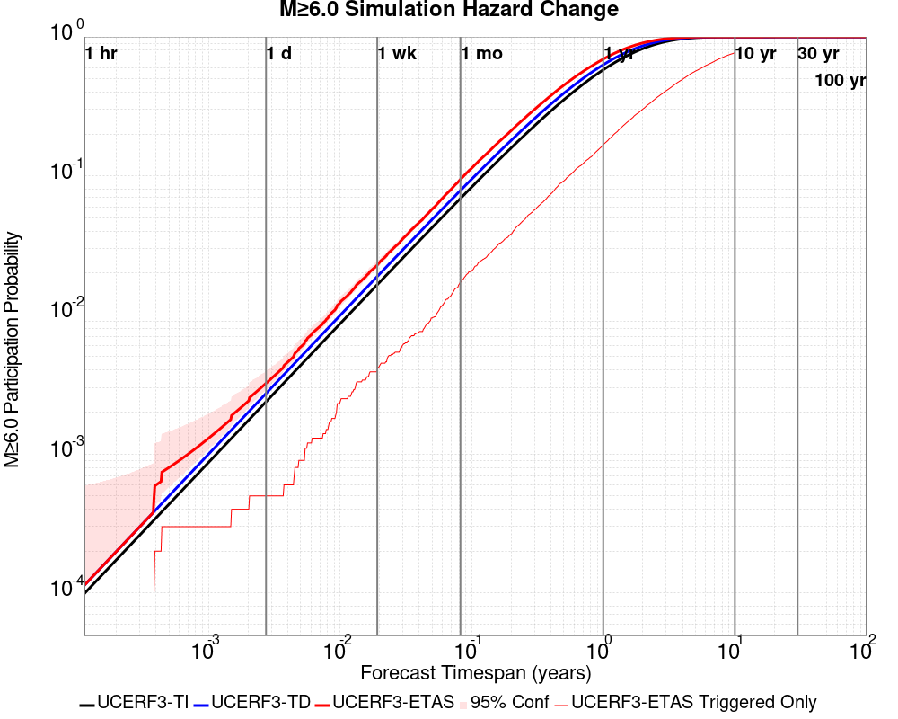
| Forecast Duration | UCERF3-ETAS [95% Conf] | UCERF3-ETAS Triggered Only | UCERF3-TD | UCERF3-ETAS/TD Gain | UCERF3-TI |
|---|---|---|---|---|---|
| 1 Hour | 1.16E-4 [1.16E-4 - 5.95E-4] | 0.000 | 1.16E-4 | 1 | 1.00E-4 |
| 1 Day | 3.29E-3 [2.97E-3 - 4.02E-3] | 5.00E-4 | 2.79E-3 | 1.18 | 2.40E-3 |
| 1 Week | 0.022 [0.021 - 0.023] | 2.30E-3 | 0.019 | 1.12 | 0.017 |
| 1 Month | 0.085 [0.084 - 0.087] | 5.40E-3 | 0.080 | 1.06 | 0.070 |
| 1 Year | 0.653 [0.651 - 0.654] | 0.037 | 0.639 | 1.02 | 0.585 |
| 10 Years | 1.000 [1.000 - 1.000] | 0.145 | 1.000 | 1 | 1.000 |
| 30 Years | 1.000 [1.000 - 1.000] * | * | 1.000 | 1 * | 1.000 |
| 100 Years | 1.000 [1.000 - 1.000] * | * | 1.000 | 1 * | 1.000 |
* forecast duration is longer than simulation length, only ETAS ruptures from the first 10 years are included

| Forecast Duration | UCERF3-ETAS [95% Conf] | UCERF3-ETAS Triggered Only | UCERF3-TD | UCERF3-ETAS/TD Gain | UCERF3-TI |
|---|---|---|---|---|---|
| 1 Hour | 1.17E-5 [1.17E-5 - 4.90E-4] | 0.000 | 1.17E-5 | 1 | 9.50E-6 |
| 1 Day | 2.82E-4 [2.82E-4 - 7.60E-4] | 0.000 | 2.82E-4 | 1 | 2.28E-4 |
| 1 Week | 2.27E-3 [2.05E-3 - 2.92E-3] | 3.00E-4 | 1.97E-3 | 1.15 | 1.60E-3 |
| 1 Month | 9.31E-3 [8.85E-3 - 0.010] | 9.00E-4 | 8.41E-3 | 1.11 | 6.82E-3 |
| 1 Year | 0.102 [0.101 - 0.104] | 4.80E-3 | 0.098 | 1.04 | 0.080 |
| 10 Years | 0.647 [0.646 - 0.648] | 0.015 | 0.642 | 1.01 | 0.565 |
| 30 Years | 0.953 [0.953 - 0.953] * | * | 0.953 | 1 * | 0.918 |
| 100 Years | 1.000 [1.000 - 1.000] * | * | 1.000 | 1 * | 1.000 |
* forecast duration is longer than simulation length, only ETAS ruptures from the first 10 years are included

| Forecast Duration | UCERF3-ETAS [95% Conf] | UCERF3-ETAS Triggered Only | UCERF3-TD | UCERF3-ETAS/TD Gain | UCERF3-TI |
|---|---|---|---|---|---|
| 1 Hour | 3.12E-7 [3.12E-7 - 4.79E-4] | 0.000 | 3.12E-7 | 1 | 2.63E-7 |
| 1 Day | 7.48E-6 [7.48E-6 - 4.86E-4] | 0.000 | 7.48E-6 | 1 | 6.30E-6 |
| 1 Week | 1.52E-4 [5.76E-5 - 7.02E-4] | 1.00E-4 | 5.24E-5 | 2.91 | 4.41E-5 |
| 1 Month | 3.24E-4 [2.30E-4 - 8.74E-4] | 1.00E-4 | 2.24E-4 | 1.45 | 1.89E-4 |
| 1 Year | 2.83E-3 [2.73E-3 - 3.38E-3] | 1.00E-4 | 2.73E-3 | 1.04 | 2.30E-3 |
| 10 Years | 0.028 [0.028 - 0.029] | 3.00E-4 | 0.028 | 1.01 | 0.023 |
| 30 Years | 0.090 [0.089 - 0.090] * | * | 0.089 | 1 * | 0.067 |
| 100 Years | 0.288 [0.287 - 0.288] * | * | 0.287 | 1 * | 0.206 |
* forecast duration is longer than simulation length, only ETAS ruptures from the first 10 years are included

These are map plots of individual catalogs from the simulations, selected as the closest catalog to each of the given percentiles in terms of total number of events.
| Duration | p0.0 %-ile | p25.0 %-ile | p50.0 %-ile | p75.0 %-ile | p90.0 %-ile | p95.0 %-ile | p97.5 %-ile | p98.0 %-ile | p99.0 %-ile | p99.99 %-ile |
|---|---|---|---|---|---|---|---|---|---|---|
| 1 Week | 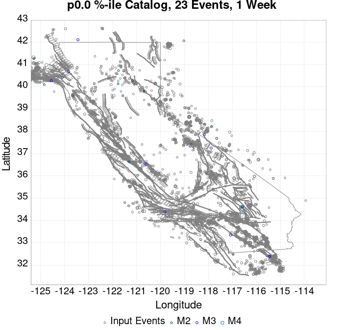 | 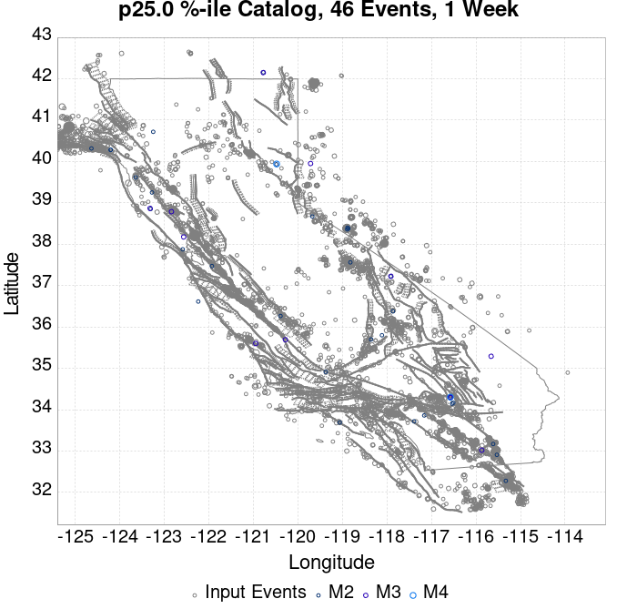 |  |  |  | 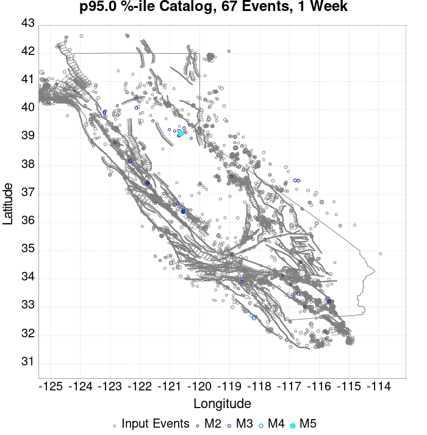 |  |  |  |  |
| 1 Month |  |  |  |  |  |  | 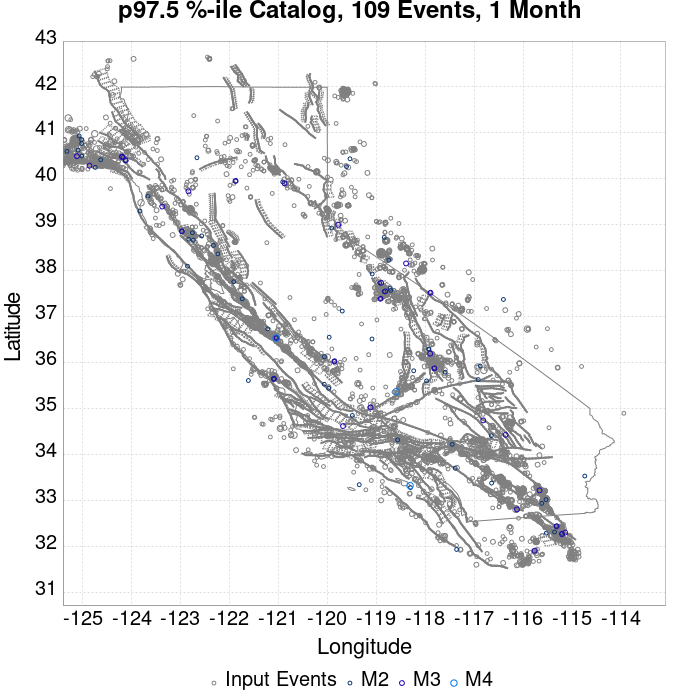 |  | 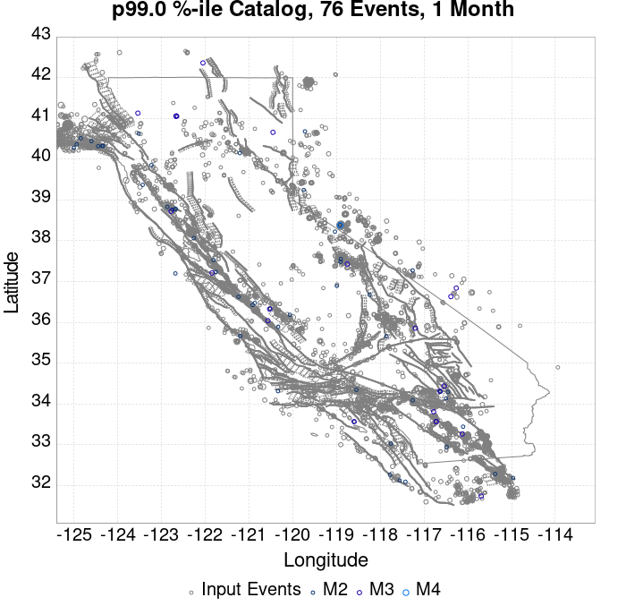 |  |
| 1 Year |  |  |  |  |  |  |  |  |  |  |
| 10 Year |  | 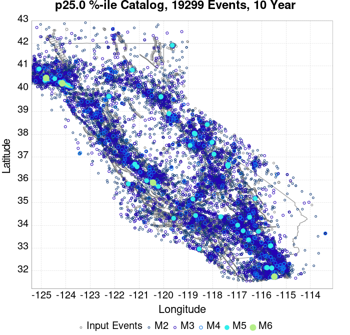 | 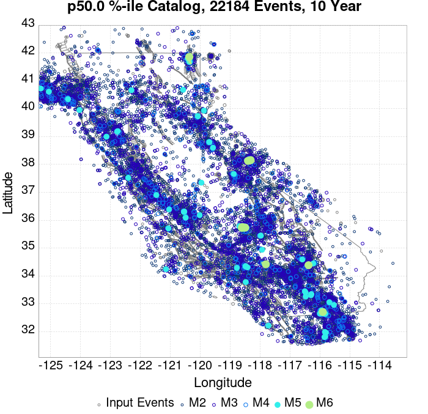 | 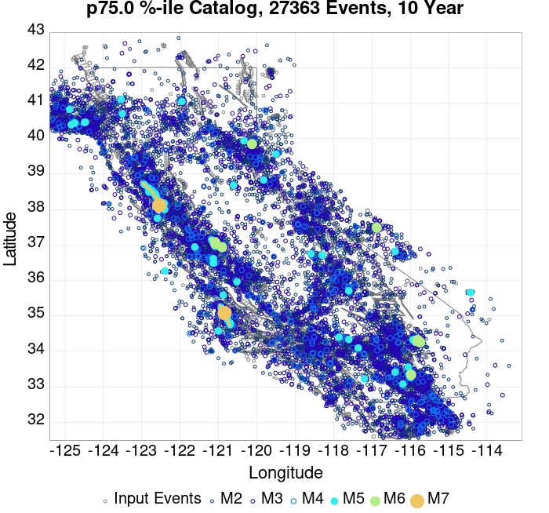 |  | 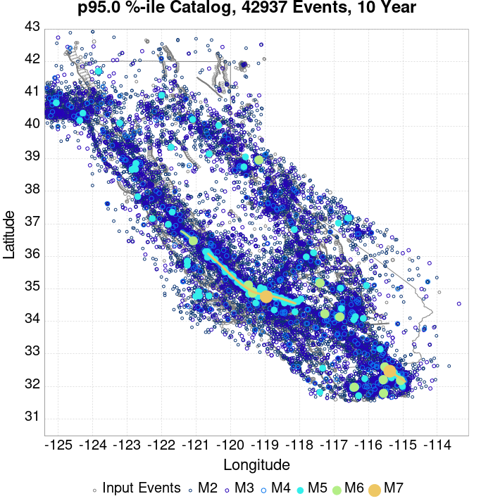 |  |  |  |  |
These plots compare simulated sequences with data from ComCat. All plots only consider events with hypocenters inside the ComCat region defined in the JSON input file.
Last updated at 2019/10/19 00:35:00 UTC, 1.8 yr after the simulation start time
| Incremental MND | Cumulative MND |
|---|---|
 |
The following plots compare simulation results with ComCat data above a magnitude threshold. Plots labeled as M≥Mc(t) use the time-dependent magnitude of completeness (Mc) defined in Helmstetter et al. (2006), which is plotted below. In the case of multiple M≥5 ruptures, either as input to the simulation or in the comparison data, the maximum calculated time-dependent Mc is used. This time-dependent Mc function is plotted below.

| M≥Mc(t) | M≥3 | M≥4 | M≥5 | M≥6 | M≥7 | M≥8 |
|---|---|---|---|---|---|---|
| 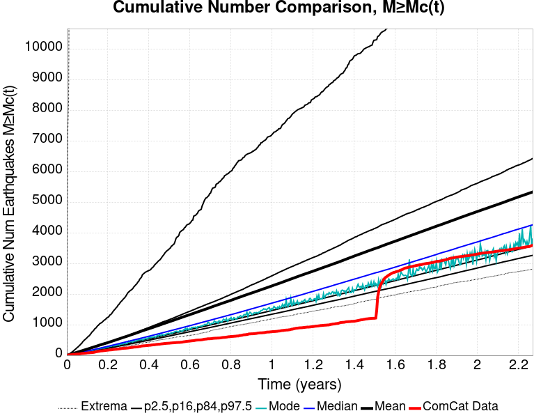 |  |  |  |  |  |  |

| 1 Day | 1 Week | 1 Month | 1 Year | Current (1.8 Year) | |
|---|---|---|---|---|---|
| M≥Mc(t) |  |  |  | ||
| M≥3 | 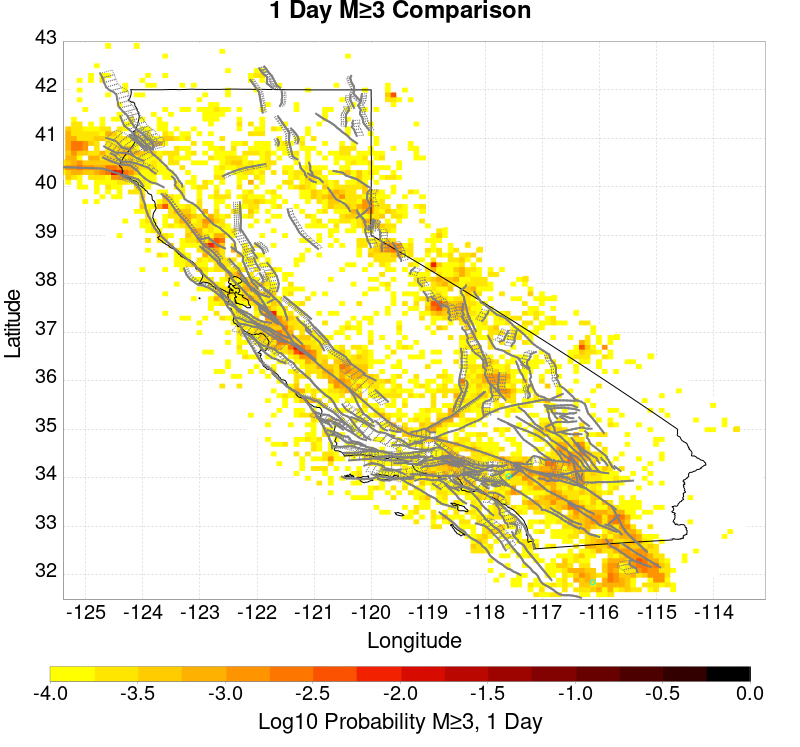 |  |  | 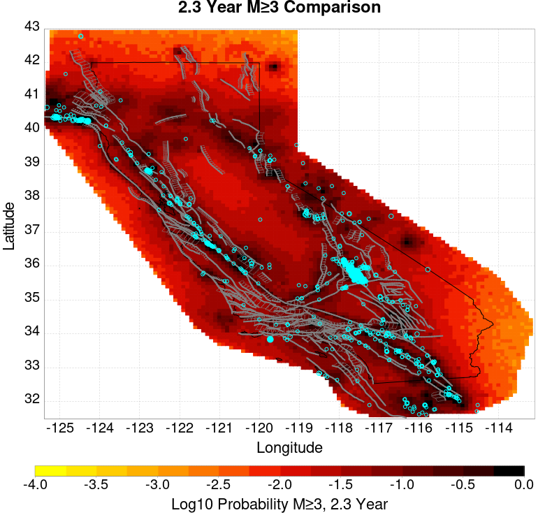 | |
| M≥4 |  |  |  | ||
| M≥5 |  |  |  |  | |
| M≥6 |  |  | 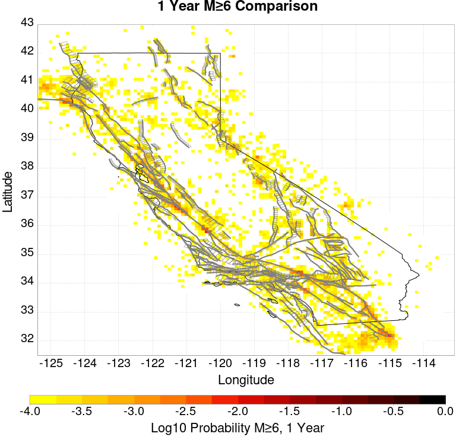 |  | |
| M≥7 |  |  |  |  |  |
| M≥8 |  |  |  |
| 1 Day | 1 Week | 1 Month | 1 Year | Current (1.8 Year) | |
|---|---|---|---|---|---|
| M≥Mc(t) |  |  |  | ||
| M≥3 |  |  |  | 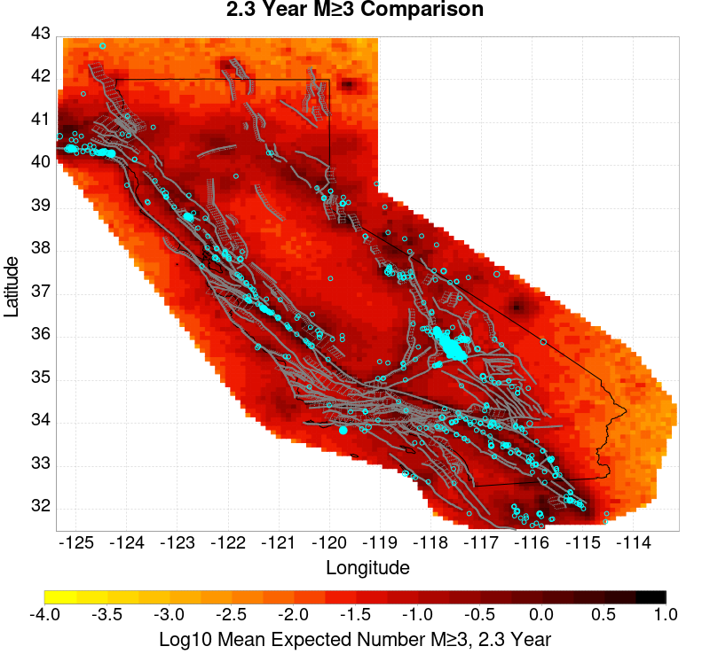 | |
| M≥4 | 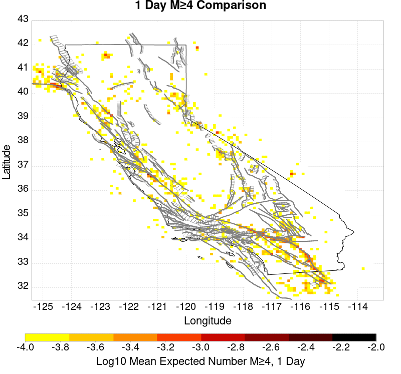 |  |  |  |  |
| M≥5 |  |  |  |  | |
| M≥6 |  |  |  |  | |
| M≥7 |  |  |  |  | 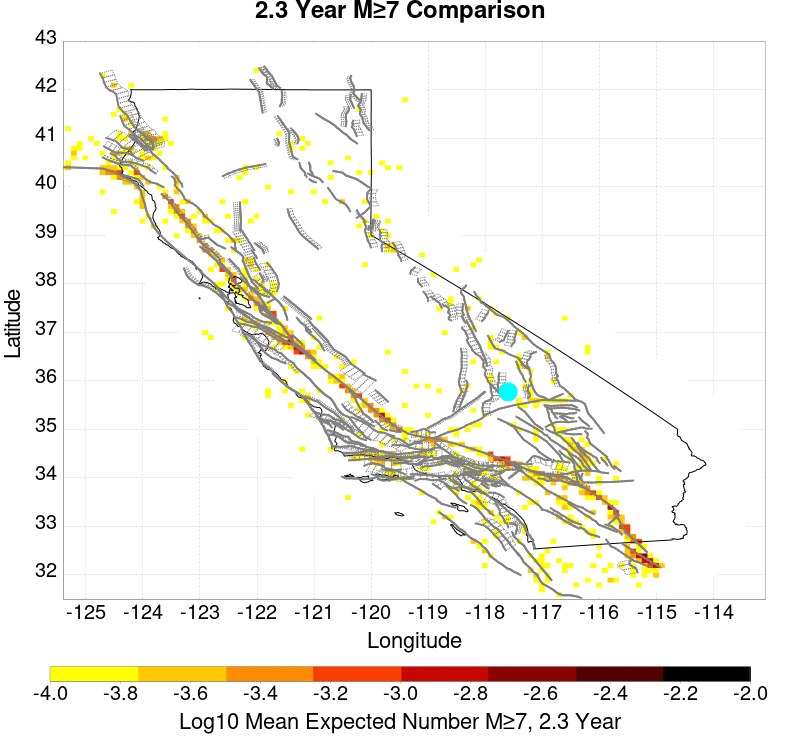 |
| M≥8 |  |  |  |  |  |
| M≥Mc(t) | M≥3 | M≥4 | M≥5 | M≥6 | M≥7 | M≥8 |
|---|---|---|---|---|---|---|
 | 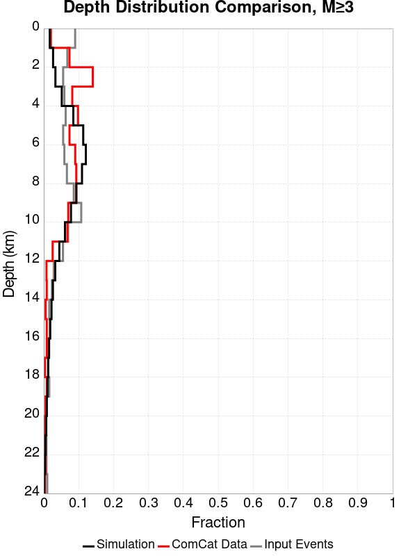 |  |  |  |  |  |
| Min Mag | 1 yr Complete Catalog (including spontaneous) | 1 yr Triggered Ruptures (no spontaneous) | 10 yr Complete Catalog (including spontaneous) | 10 yr Triggered Ruptures (no spontaneous) | 10 yr Triggered Ruptures (primary aftershocks only) |
|---|---|---|---|---|---|
| All Supra. Seis. |  |  |  |  |  |
| M≥6.5 |  |  |  |  |  |
| M≥7 |  | 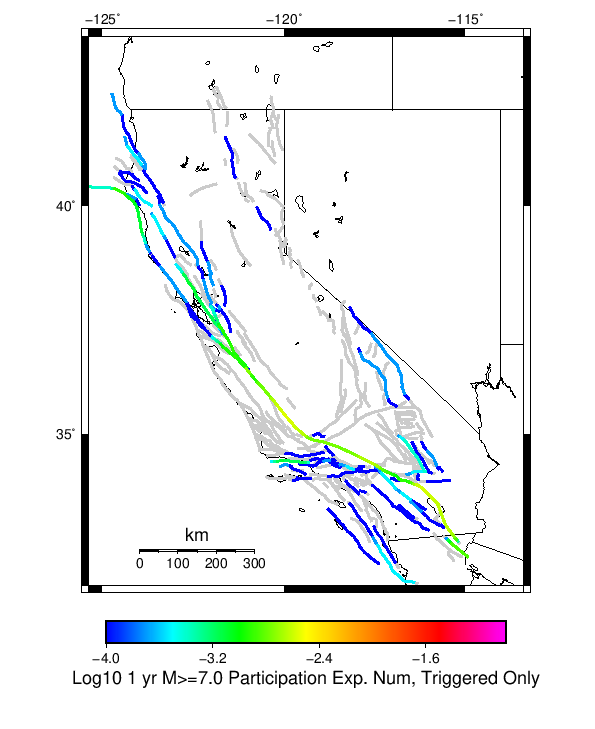 |  |  |  |
| M≥7.5 | 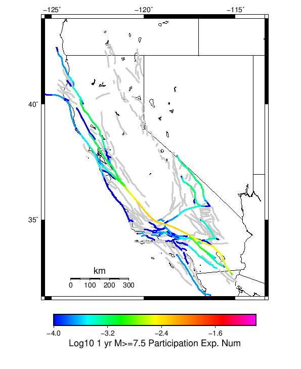 |  |  |  |  |
| M≥8 |  |  |  | 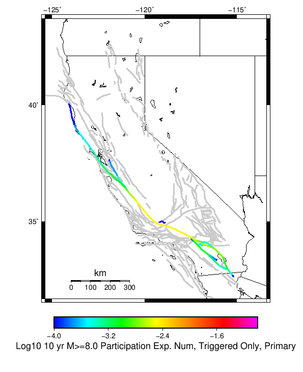 |
First 10 of 158 with matching ruptures shown
| Parent Name | Total 10 Year Mean Count | Total 1 Day Prob | Total 1 Week Prob | Total 1 Month Prob | Total 1 Year Prob | Total 10 Year Prob | Triggered 10 Year Mean Count | Triggered 1 Day Prob | Triggered 1 Week Prob | Triggered 1 Month Prob | Triggered 1 Year Prob | Triggered 10 Year Prob | Triggered 10 Year Primary Mean Count |
|---|---|---|---|---|---|---|---|---|---|---|---|---|---|
| San Andreas (Creeping Section) 2011 CFM | 0.0161 | 1.0E-4 | 8.0E-4 | 0.0011 | 0.0046 | 0.0144 | 0.0161 | 1.0E-4 | 8.0E-4 | 0.0011 | 0.0046 | 0.0144 | 0.0081 |
| Mendocino | 0.0146 | 1.0E-4 | 1.0E-4 | 3.0E-4 | 0.0029 | 0.0143 | 0.0146 | 1.0E-4 | 1.0E-4 | 3.0E-4 | 0.0029 | 0.0143 | 0.0087 |
| Brawley (Seismic Zone) alt 1 | 0.0128 | 0.0 | 1.0E-4 | 3.0E-4 | 0.0032 | 0.0125 | 0.0128 | 0.0 | 1.0E-4 | 3.0E-4 | 0.0032 | 0.0125 | 0.0083 |
| West Napa 2011 CFM | 0.0106 | 0.0 | 0.0 | 2.0E-4 | 0.0019 | 0.0102 | 0.0106 | 0.0 | 0.0 | 2.0E-4 | 0.0019 | 0.0102 | 0.0057 |
| Imperial | 0.0105 | 0.0 | 1.0E-4 | 3.0E-4 | 0.0027 | 0.0103 | 0.0105 | 0.0 | 1.0E-4 | 3.0E-4 | 0.0027 | 0.0103 | 0.0068 |
| San Andreas (Parkfield) | 0.0056 | 0.0 | 1.0E-4 | 1.0E-4 | 0.0015 | 0.0055 | 0.0056 | 0.0 | 1.0E-4 | 1.0E-4 | 0.0015 | 0.0055 | 0.0038 |
| Calaveras (So) - Paicines extension 2011 CFM | 0.0048 | 0.0 | 2.0E-4 | 2.0E-4 | 0.0015 | 0.0044 | 0.0048 | 0.0 | 2.0E-4 | 2.0E-4 | 0.0015 | 0.0044 | 0.0024 |
| San Andreas (Coachella) rev | 0.0041 | 0.0 | 1.0E-4 | 2.0E-4 | 0.0016 | 0.0041 | 0.0041 | 0.0 | 1.0E-4 | 2.0E-4 | 0.0016 | 0.0041 | 0.0022 |
| Hunting Creek - Berryessa 2011 CFM | 0.0038 | 0.0 | 0.0 | 1.0E-4 | 9.0E-4 | 0.0036 | 0.0038 | 0.0 | 0.0 | 1.0E-4 | 9.0E-4 | 0.0036 | 0.0016 |
| Hayward (So) 2011 CFM | 0.0036 | 0.0 | 3.0E-4 | 3.0E-4 | 9.0E-4 | 0.0033 | 0.0036 | 0.0 | 3.0E-4 | 3.0E-4 | 9.0E-4 | 0.0033 | 0.0018 |
First 10 of 133 with matching ruptures shown
| Parent Name | Total 10 Year Mean Count | Total 1 Day Prob | Total 1 Week Prob | Total 1 Month Prob | Total 1 Year Prob | Total 10 Year Prob | Triggered 10 Year Mean Count | Triggered 1 Day Prob | Triggered 1 Week Prob | Triggered 1 Month Prob | Triggered 1 Year Prob | Triggered 10 Year Prob | Triggered 10 Year Primary Mean Count |
|---|---|---|---|---|---|---|---|---|---|---|---|---|---|
| Mendocino | 0.0074 | 1.0E-4 | 1.0E-4 | 2.0E-4 | 0.0017 | 0.0073 | 0.0074 | 1.0E-4 | 1.0E-4 | 2.0E-4 | 0.0017 | 0.0073 | 0.0045 |
| Brawley (Seismic Zone) alt 1 | 0.0071 | 0.0 | 1.0E-4 | 2.0E-4 | 0.0019 | 0.0069 | 0.0071 | 0.0 | 1.0E-4 | 2.0E-4 | 0.0019 | 0.0069 | 0.0044 |
| Imperial | 0.0071 | 0.0 | 1.0E-4 | 2.0E-4 | 0.0019 | 0.0069 | 0.0071 | 0.0 | 1.0E-4 | 2.0E-4 | 0.0019 | 0.0069 | 0.0044 |
| San Andreas (Creeping Section) 2011 CFM | 0.0046 | 0.0 | 1.0E-4 | 3.0E-4 | 0.0016 | 0.0045 | 0.0046 | 0.0 | 1.0E-4 | 3.0E-4 | 0.0016 | 0.0045 | 0.0023 |
| San Andreas (Coachella) rev | 0.004 | 0.0 | 1.0E-4 | 2.0E-4 | 0.0016 | 0.004 | 0.004 | 0.0 | 1.0E-4 | 2.0E-4 | 0.0016 | 0.004 | 0.0022 |
| West Napa 2011 CFM | 0.0033 | 0.0 | 0.0 | 2.0E-4 | 7.0E-4 | 0.0033 | 0.0033 | 0.0 | 0.0 | 2.0E-4 | 7.0E-4 | 0.0033 | 0.0016 |
| Hayward (So) 2011 CFM | 0.0032 | 0.0 | 3.0E-4 | 3.0E-4 | 9.0E-4 | 0.003 | 0.0032 | 0.0 | 3.0E-4 | 3.0E-4 | 9.0E-4 | 0.003 | 0.0017 |
| San Andreas (San Gorgonio Pass-Garnet HIll) | 0.0027 | 0.0 | 1.0E-4 | 2.0E-4 | 0.0012 | 0.0027 | 0.0027 | 0.0 | 1.0E-4 | 2.0E-4 | 0.0012 | 0.0027 | 0.0013 |
| Calaveras (So) - Paicines extension 2011 CFM | 0.0023 | 0.0 | 2.0E-4 | 2.0E-4 | 8.0E-4 | 0.0023 | 0.0023 | 0.0 | 2.0E-4 | 2.0E-4 | 8.0E-4 | 0.0023 | 0.001 |
| Cerro Prieto | 0.0021 | 0.0 | 0.0 | 2.0E-4 | 7.0E-4 | 0.0021 | 0.0021 | 0.0 | 0.0 | 2.0E-4 | 7.0E-4 | 0.0021 | 0.0014 |
First 10 of 80 with matching ruptures shown
| Parent Name | Total 10 Year Mean Count | Total 1 Day Prob | Total 1 Week Prob | Total 1 Month Prob | Total 1 Year Prob | Total 10 Year Prob | Triggered 10 Year Mean Count | Triggered 1 Day Prob | Triggered 1 Week Prob | Triggered 1 Month Prob | Triggered 1 Year Prob | Triggered 10 Year Prob | Triggered 10 Year Primary Mean Count |
|---|---|---|---|---|---|---|---|---|---|---|---|---|---|
| San Andreas (Coachella) rev | 0.0036 | 0.0 | 1.0E-4 | 2.0E-4 | 0.0013 | 0.0036 | 0.0036 | 0.0 | 1.0E-4 | 2.0E-4 | 0.0013 | 0.0036 | 0.0019 |
| Brawley (Seismic Zone) alt 1 | 0.0035 | 0.0 | 1.0E-4 | 2.0E-4 | 0.0012 | 0.0035 | 0.0035 | 0.0 | 1.0E-4 | 2.0E-4 | 0.0012 | 0.0035 | 0.0018 |
| Imperial | 0.0035 | 0.0 | 1.0E-4 | 2.0E-4 | 0.0012 | 0.0035 | 0.0035 | 0.0 | 1.0E-4 | 2.0E-4 | 0.0012 | 0.0035 | 0.0018 |
| San Andreas (San Gorgonio Pass-Garnet HIll) | 0.0027 | 0.0 | 1.0E-4 | 2.0E-4 | 0.0012 | 0.0027 | 0.0027 | 0.0 | 1.0E-4 | 2.0E-4 | 0.0012 | 0.0027 | 0.0013 |
| San Andreas (Creeping Section) 2011 CFM | 0.0021 | 0.0 | 1.0E-4 | 3.0E-4 | 8.0E-4 | 0.0021 | 0.0021 | 0.0 | 1.0E-4 | 3.0E-4 | 8.0E-4 | 0.0021 | 9.0E-4 |
| Mendocino | 0.0017 | 0.0 | 0.0 | 0.0 | 5.0E-4 | 0.0017 | 0.0017 | 0.0 | 0.0 | 0.0 | 5.0E-4 | 0.0017 | 0.0011 |
| San Andreas (Offshore) 2011 CFM | 0.0016 | 0.0 | 0.0 | 0.0 | 4.0E-4 | 0.0016 | 0.0016 | 0.0 | 0.0 | 0.0 | 4.0E-4 | 0.0016 | 0.001 |
| San Andreas (Santa Cruz Mts) 2011 CFM | 0.0015 | 0.0 | 1.0E-4 | 3.0E-4 | 5.0E-4 | 0.0015 | 0.0015 | 0.0 | 1.0E-4 | 3.0E-4 | 5.0E-4 | 0.0015 | 6.0E-4 |
| Calaveras (So) - Paicines extension 2011 CFM | 0.0013 | 0.0 | 1.0E-4 | 1.0E-4 | 3.0E-4 | 0.0013 | 0.0013 | 0.0 | 1.0E-4 | 1.0E-4 | 3.0E-4 | 0.0013 | 6.0E-4 |
| Calaveras (Central) 2011 CFM | 0.0011 | 0.0 | 1.0E-4 | 1.0E-4 | 2.0E-4 | 0.0011 | 0.0011 | 0.0 | 1.0E-4 | 1.0E-4 | 2.0E-4 | 0.0011 | 4.0E-4 |
First 10 of 52 with matching ruptures shown
| Parent Name | Total 10 Year Mean Count | Total 1 Day Prob | Total 1 Week Prob | Total 1 Month Prob | Total 1 Year Prob | Total 10 Year Prob | Triggered 10 Year Mean Count | Triggered 1 Day Prob | Triggered 1 Week Prob | Triggered 1 Month Prob | Triggered 1 Year Prob | Triggered 10 Year Prob | Triggered 10 Year Primary Mean Count |
|---|---|---|---|---|---|---|---|---|---|---|---|---|---|
| San Andreas (Mojave N) | 0.001 | 0.0 | 1.0E-4 | 1.0E-4 | 6.0E-4 | 0.001 | 0.001 | 0.0 | 1.0E-4 | 1.0E-4 | 6.0E-4 | 0.001 | 6.0E-4 |
| San Andreas (Parkfield) | 0.001 | 0.0 | 1.0E-4 | 1.0E-4 | 5.0E-4 | 0.001 | 0.001 | 0.0 | 1.0E-4 | 1.0E-4 | 5.0E-4 | 0.001 | 5.0E-4 |
| San Andreas (Big Bend) | 9.0E-4 | 0.0 | 1.0E-4 | 1.0E-4 | 5.0E-4 | 9.0E-4 | 9.0E-4 | 0.0 | 1.0E-4 | 1.0E-4 | 5.0E-4 | 9.0E-4 | 5.0E-4 |
| San Andreas (Carrizo) rev | 9.0E-4 | 0.0 | 1.0E-4 | 1.0E-4 | 5.0E-4 | 9.0E-4 | 9.0E-4 | 0.0 | 1.0E-4 | 1.0E-4 | 5.0E-4 | 9.0E-4 | 5.0E-4 |
| San Andreas (Cholame) rev | 9.0E-4 | 0.0 | 1.0E-4 | 1.0E-4 | 5.0E-4 | 9.0E-4 | 9.0E-4 | 0.0 | 1.0E-4 | 1.0E-4 | 5.0E-4 | 9.0E-4 | 5.0E-4 |
| San Andreas (Creeping Section) 2011 CFM | 9.0E-4 | 0.0 | 1.0E-4 | 1.0E-4 | 5.0E-4 | 9.0E-4 | 9.0E-4 | 0.0 | 1.0E-4 | 1.0E-4 | 5.0E-4 | 9.0E-4 | 4.0E-4 |
| Brawley (Seismic Zone) alt 1 | 8.0E-4 | 0.0 | 0.0 | 0.0 | 3.0E-4 | 8.0E-4 | 8.0E-4 | 0.0 | 0.0 | 0.0 | 3.0E-4 | 8.0E-4 | 5.0E-4 |
| Imperial | 8.0E-4 | 0.0 | 0.0 | 0.0 | 3.0E-4 | 8.0E-4 | 8.0E-4 | 0.0 | 0.0 | 0.0 | 3.0E-4 | 8.0E-4 | 5.0E-4 |
| San Andreas (Coachella) rev | 8.0E-4 | 0.0 | 0.0 | 0.0 | 3.0E-4 | 8.0E-4 | 8.0E-4 | 0.0 | 0.0 | 0.0 | 3.0E-4 | 8.0E-4 | 5.0E-4 |
| San Andreas (Mojave S) | 8.0E-4 | 0.0 | 1.0E-4 | 1.0E-4 | 4.0E-4 | 8.0E-4 | 8.0E-4 | 0.0 | 1.0E-4 | 1.0E-4 | 4.0E-4 | 8.0E-4 | 5.0E-4 |
First 10 of 26 with matching ruptures shown
| Parent Name | Total 10 Year Mean Count | Total 1 Day Prob | Total 1 Week Prob | Total 1 Month Prob | Total 1 Year Prob | Total 10 Year Prob | Triggered 10 Year Mean Count | Triggered 1 Day Prob | Triggered 1 Week Prob | Triggered 1 Month Prob | Triggered 1 Year Prob | Triggered 10 Year Prob | Triggered 10 Year Primary Mean Count |
|---|---|---|---|---|---|---|---|---|---|---|---|---|---|
| San Andreas (Big Bend) | 3.0E-4 | 0.0 | 1.0E-4 | 1.0E-4 | 1.0E-4 | 3.0E-4 | 3.0E-4 | 0.0 | 1.0E-4 | 1.0E-4 | 1.0E-4 | 3.0E-4 | 2.0E-4 |
| San Andreas (Carrizo) rev | 3.0E-4 | 0.0 | 1.0E-4 | 1.0E-4 | 1.0E-4 | 3.0E-4 | 3.0E-4 | 0.0 | 1.0E-4 | 1.0E-4 | 1.0E-4 | 3.0E-4 | 2.0E-4 |
| San Andreas (Cholame) rev | 3.0E-4 | 0.0 | 1.0E-4 | 1.0E-4 | 1.0E-4 | 3.0E-4 | 3.0E-4 | 0.0 | 1.0E-4 | 1.0E-4 | 1.0E-4 | 3.0E-4 | 2.0E-4 |
| San Andreas (Mojave N) | 3.0E-4 | 0.0 | 1.0E-4 | 1.0E-4 | 1.0E-4 | 3.0E-4 | 3.0E-4 | 0.0 | 1.0E-4 | 1.0E-4 | 1.0E-4 | 3.0E-4 | 2.0E-4 |
| San Andreas (Mojave S) | 3.0E-4 | 0.0 | 1.0E-4 | 1.0E-4 | 1.0E-4 | 3.0E-4 | 3.0E-4 | 0.0 | 1.0E-4 | 1.0E-4 | 1.0E-4 | 3.0E-4 | 2.0E-4 |
| San Andreas (Parkfield) | 3.0E-4 | 0.0 | 1.0E-4 | 1.0E-4 | 1.0E-4 | 3.0E-4 | 3.0E-4 | 0.0 | 1.0E-4 | 1.0E-4 | 1.0E-4 | 3.0E-4 | 2.0E-4 |
| San Andreas (Creeping Section) 2011 CFM | 2.0E-4 | 0.0 | 1.0E-4 | 1.0E-4 | 1.0E-4 | 2.0E-4 | 2.0E-4 | 0.0 | 1.0E-4 | 1.0E-4 | 1.0E-4 | 2.0E-4 | 1.0E-4 |
| San Andreas (San Bernardino N) | 2.0E-4 | 0.0 | 1.0E-4 | 1.0E-4 | 1.0E-4 | 2.0E-4 | 2.0E-4 | 0.0 | 1.0E-4 | 1.0E-4 | 1.0E-4 | 2.0E-4 | 2.0E-4 |
| San Andreas (Santa Cruz Mts) 2011 CFM | 2.0E-4 | 0.0 | 1.0E-4 | 1.0E-4 | 1.0E-4 | 2.0E-4 | 2.0E-4 | 0.0 | 1.0E-4 | 1.0E-4 | 1.0E-4 | 2.0E-4 | 1.0E-4 |
| Brawley (Seismic Zone) alt 1 | 1.0E-4 | 0.0 | 0.0 | 0.0 | 0.0 | 1.0E-4 | 1.0E-4 | 0.0 | 0.0 | 0.0 | 0.0 | 1.0E-4 | 1.0E-4 |
The first 5 sections (sorted by trigger rate) are plotted below. All fault MPDs are available here
| 1 Week | 1 Month | 1 Year | 10 Year |
|---|---|---|---|
 |  |  |  |
 |  |  |  |
 |  |  |  |
 |  |  | 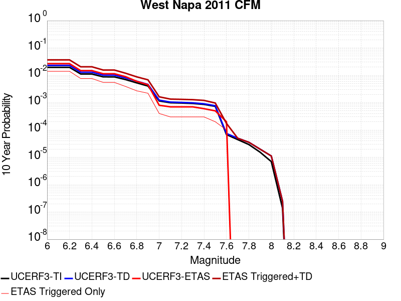 |
 |  |  |  |
| Min Mag | Complete Catalog (including spontaneous) | Triggered Ruptures (no spontaneous) | Triggered Ruptures (primary aftershocks only) |
|---|---|---|---|
| M≥2.5 |  |  |  |
| M≥5 | 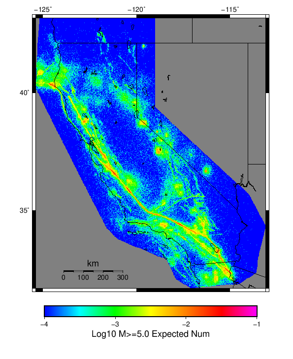 |  |  |
| M≥6 |  |  |  |
| M≥7 |  |
{
"numSimulations": 10000,
"duration": 10.0,
"startTimeMillis": 1514764801000,
"includeSpontaneous": true,
"randomSeed": 1571427657409,
"binaryOutput": true,
"binaryOutputFilters": [
{
"prefix": "results_complete",
"descendantsOnly": false
},
{
"prefix": "results_m5_preserve_chain",
"minMag": 5.0,
"preserveChainBelowMag": true,
"descendantsOnly": false
},
{
"prefix": "results_triggered_descendants",
"descendantsOnly": true
}
],
"forceRecalc": false,
"simulationName": "ComCat data 5.7 yr between historical and 2018-01-01, Statewide, Point Sources, Spontaneous, Historical Catalog",
"numRetries": 3,
"outputDir": "/home/scec-02/kmilner/ucerf3/etas_sim/2019_10_18-ComCatdata5p7yrbetweenhistoricaland20180101_Statewide_PointSources_Spontaneous_Historical",
"triggerCatalog": "/home/scec-02/kmilner/ucerf3/ucerf3-etas-launcher/inputs/u3_historical_catalog.txt",
"triggerCatalogSurfaceMappings": "/home/scec-02/kmilner/ucerf3/ucerf3-etas-launcher/inputs/u3_historical_catalog_finite_fault_mappings.xml",
"treatTriggerCatalogAsSpontaneous": true,
"triggerRuptures": [
"omitted due to length, see original input file"
],
"cacheDir": "/home/scec-02/kmilner/ucerf3/ucerf3-etas-launcher/inputs/cache_fm3p1_ba",
"fssFile": "/home/scec-02/kmilner/ucerf3/ucerf3-etas-launcher/inputs/2013_05_10-ucerf3p3-production-10runs_COMPOUND_SOL_FM3_1_SpatSeisU3_MEAN_BRANCH_AVG_SOL.zip",
"probModel": "FULL_TD",
"applySubSeisForSupraNucl": true,
"totRateScaleFactor": 1.14,
"gridSeisCorr": true,
"timeIndependentERF": false,
"griddedOnly": false,
"imposeGR": false,
"includeIndirectTriggering": true,
"gridSeisDiscr": 0.1,
"catalogCompletenessModel": "RELAXED",
"configCommand": "u3etas_comcat_config_builder.sh --start-after-historical --end-date 2018-01-01 --historical-catalog --include-spontaneous --num-simulations 10000 --finite-surf-shakemap --finite-surf-shakemap-min-mag 6 --hpc-site USC_HPC --nodes 36 --hours 24 --queue scec",
"configTime": 1571427657409,
"comcatMetadata": {
"region": {
"border": [
{
"latitude": 43.0,
"longitude": -125.2
},
{
"latitude": 43.0,
"longitude": -119.0
},
{
"latitude": 39.4,
"longitude": -119.0
},
{
"latitude": 35.7,
"longitude": -114.00000000000001
},
{
"latitude": 34.3,
"longitude": -113.1
},
{
"latitude": 32.9,
"longitude": -113.5
},
{
"latitude": 32.2,
"longitude": -113.6
},
{
"latitude": 31.7,
"longitude": -114.5
},
{
"latitude": 31.5,
"longitude": -117.1
},
{
"latitude": 31.900000000000002,
"longitude": -117.90000000000002
},
{
"latitude": 32.8,
"longitude": -118.40000000000002
},
{
"latitude": 33.7,
"longitude": -121.0
},
{
"latitude": 34.2,
"longitude": -121.6
},
{
"latitude": 37.7,
"longitude": -123.80000000000001
},
{
"latitude": 40.2,
"longitude": -125.4
},
{
"latitude": 40.5,
"longitude": -125.4
}
]
},
"minDepth": -10.0,
"maxDepth": 24.0,
"minMag": 2.5,
"startTime": 1335296660000,
"endTime": 1514764800000
}
}